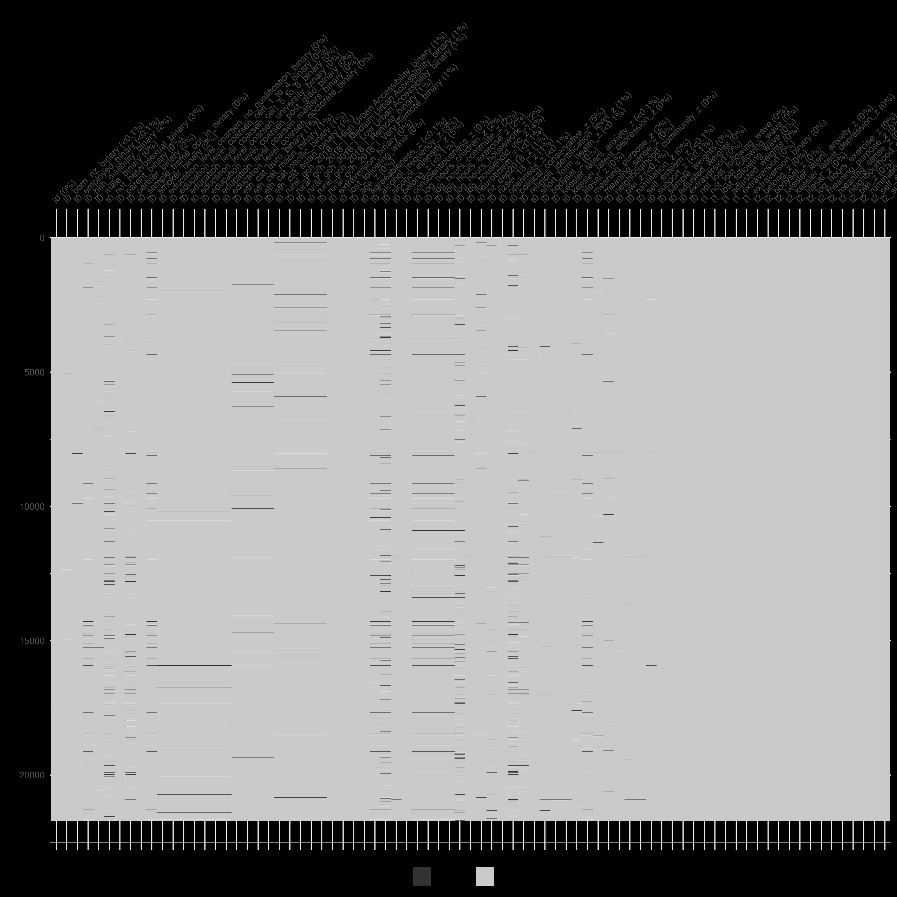

This script prepares your data. Run it once – running it twice would be like turning the ignition off just to start your car again.
Code
# for students: reproducibility is like following a recipe; each step ensures the same result# restart fresh session if needed# +--------------------------+# | DO NOT ALTER |# +--------------------------+rstudioapi::restartSession()# set seed for reproducibilityset.seed(123)# essential library ---------------------------------------------------------# install and load 'margot' from GitHub if missingif (!require(margot, quietly =TRUE)) { devtools::install_github("go-bayes/margot")library(margot)}if (packageVersion("margot") <"1.0.37") {stop("please install margot >= 1.0.37 for this workflow\n run: devtools::install_github(\"go-bayes/margot\")")}# call librarylibrary("margot")# load packages ----------------------------------------------------------# install and load other packages from CRAN if missingif (!requireNamespace("tidyverse", quietly =TRUE)) {install.packages("tidyverse")}library(tidyverse)if (!requireNamespace("qs", quietly =TRUE)) {install.packages("qs")}library(qs)if (!requireNamespace("here", quietly =TRUE)) {install.packages("here")}library(here)if (!requireNamespace("cli", quietly =TRUE)) {install.packages("cli")}library("cli")# create data directory if it doesn't exist -----------------------------if (!dir.exists("data")) {dir.create("data") # first time only: make a folder named 'data'}# define file paths ------------------------------------------------------# use here() to build paths relative to your project rootdata_dir <- here::here("data")cli::cli_h1("created data folder ✔")# download synthetic data ------------------------------------------------# specify the url for the data fileurl <-"https://www.dropbox.com/scl/fi/ru0ecayju04ja8ky1mhel/df_nz_long.qs?rlkey=prpk9a5v4vcg1ilhkgf357dhd&dl=1"# download to a temporary file for safetytmp_file <-tempfile(fileext =".qs")download.file(url, tmp_file, mode ="wb")# read the data into R using qreaddf_nz_long <-qread(tmp_file)# inspect the data -------------------------------------------------------# view the first few rows to check it loaded correctlyprint(head(df_nz_long))# list column names so you know what variables are availableprint(colnames(df_nz_long))# save a copy of the data ------------------------------------------------# save the dataset to your data directory for future usehere_save_qs(df_nz_long, "df_nz_long", data_dir)cli::cli_h1("downloaded data to data folder for furture use ✔")# +--------------------------+# | END DO NOT ALTER |# +--------------------------+# +--------------------------+# | END |# +--------------------------+
Script 1: Initial Data Wrangling is HERE
Code
# script 1 workflow lecture 10# may 2025# questions: joseph.bulbulia@vuw.ac.nz# +--------------------------+# | DO NOT ALTER |# +--------------------------+# restart fresh session for a clean workspacerstudioapi::restartSession()# set seed for reproducibilityset.seed(123)# essential library ---------------------------------------------------------# install and load 'margot' from GitHub if missingif (!require(margot, quietly =TRUE)) { devtools::install_github("go-bayes/margot")library(margot)}if (packageVersion("margot") <"1.0.37") {stop("please install margot >= 1.0.37 for this workflow\n run: devtools::install_github(\"go-bayes/margot\")")}# call librarylibrary("margot")# load packages -------------------------------------------------------------# pacman will install missing packages automaticallyif (!requireNamespace("pacman", quietly =TRUE)) install.packages("pacman")pacman::p_load( tidyverse, # data wrangling + plotting qs, # fast data i/o here, # project-relative file paths data.table, # fast data manipulation fastDummies, # dummy variable creation naniar, # missing data handling skimr, # summary statistics grf, # machine learning forests kableExtra, # tables ggplot2, # graphs doParallel, # parallel processing grf, # causal forests janitor, # variables names stringr, # variable names patchwork, # graphs table1, # tables, cli)# create directories --------------------------------------------------------# create data directory if it doesn't existif (!dir.exists("data")) {dir.create("data") # first time only: make a folder named 'data'}if (!dir.exists("save_directory")) {dir.create("save_directory") # first time only: make a folder named 'data'}# set up data directory structuredata_dir <- here::here("data")push_mods <- here::here("save_directory") # load data -----------------------------------------------------------------df_nz_long <- margot::here_read_qs("df_nz_long", data_dir)# initial data prep ---------------------------------------------------------# prepare intial data# define labels for rural classificationrural_labels <-c("High Urban Accessibility", "Medium Urban Accessibility","Low Urban Accessibility", "Remote", "Very Remote")dat_prep <- df_nz_long |>arrange(id, wave) |> margot::remove_numeric_attributes() |>mutate(# cap extreme valuesalcohol_intensity =pmin(alcohol_intensity, 15),# flag heavy drinkers: freq ≥3 → 1, ≤2 → 0, else NAheavy_drinker =case_when( alcohol_frequency >=3~1, alcohol_frequency <=2~0,TRUE~NA_real_ ),# map freq categories to weekly countsalcohol_frequency_weekly =recode( alcohol_frequency,`0`=0, `1`=0.25,`2`=1, `3`=2.5,`4`=4.5,.default =NA_real_ ),# relabel rural factorrural_gch_2018_l =factor( rural_gch_2018_l,levels =1:5,labels = rural_labels,ordered =TRUE ) ) |>droplevels()# view variable names -----------------------------------------------------print(colnames(df_nz_long)) # get total participantsn_total =length(unique(df_nz_long$id))# pretty numbern_total = margot::pretty_number(n_total)# savehere_save(n_total, "n_total")# +--------------------------+# | END DO NOT ALTER |# +--------------------------+# +--------------------------+# | MODIFY THIS SECTION |# +--------------------------+# +--------------------------+# | ALERT |# +--------------------------+# +--------------------------+# | OPTIONALLY MODIFY SECTION|# +--------------------------+# define study variables ----------------------------------------------------# ** key decision 1: define your three study waves **# ** define your study waves **baseline_wave <-"2018"# baseline measurementexposure_waves <-c("2019") # when exposure is measuredoutcome_wave <-"2020"# when outcomes are measuredall_waves <-c(baseline_wave, exposure_waves, outcome_wave)cli::cli_h1("set waves for three-wave study ✔")# +--------------------------+# |END OPTIONALLY MODIFY SEC.|# +--------------------------+# +--------------------------+# | ENDALERT |# +--------------------------+# define exposure variable ----------------------------------------------------# ** key decision 2: define your exposure variable **# +--------------------------+# | ALERT |# +--------------------------+# +--------------------------+# | MODIFY THIS SECTION |# +--------------------------+name_exposure <-"extraversion"# exposure variable labelsvar_labels_exposure <-list("extraversion"="Extraversion","extraversion_binary"="Extraversion (binary)")cli::cli_h1("set variable name for exposure ✔")# +--------------------------+# | ENDALERT |# +--------------------------+# +--------------------------+# | END MODIFY SECTION |# +--------------------------+# define outcome variables -------------------------------------------# ** key decision 3: define your outcome variable **# +--------------------------+# | ALERT |# +--------------------------+# +--------------------------+# | MODIFY THIS SECTION |# +--------------------------+# ** key decision 3: define outcome variables **# here, we are focussing on a subset of wellbeing outcomes# chose outcomes relevant to * your * study. Might be all/some/none/exactly # these:outcome_vars <-c(# health outcomes# "alcohol_frequency_weekly", "alcohol_intensity",# "hlth_bmi", "log_hours_exercise", # "hlth_sleep_hours", # "short_form_health",# psychological outcomes# "hlth_fatigue", "kessler_latent_anxiety", "kessler_latent_depression", "rumination",# well-being outcomes# "bodysat", #"forgiveness", "gratitude", "lifesat", "meaning_purpose", "meaning_sense", # "perfectionism", "pwi", #"self_control", "self_esteem", #"sexual_satisfaction",# social outcomes"belong", "neighbourhood_community", "support")cli::cli_h1("set variable name for outcomes ✔")# +--------------------------+# | END MODIFY SECTION |# +--------------------------+# +--------------------------+# | ENDALERT |# +--------------------------+# +--------------------------+# | ALERT |# +--------------------------+# +--------------------------+# | OPTIONALLY MODIFY SECTION|# +--------------------------+# define baseline variables -----------------------------------------------# key decision 4 ** define baseline covariates **# these are demographics, traits, etc. measured at baseline, that are common# causes of the exposure and outcome. # note we will automatically include baseline measures of the exposure and outcome# later in the workflow.baseline_vars <-c(# demographics"age", "born_nz_binary", "education_level_coarsen","employed_binary", "eth_cat", "male_binary","not_heterosexual_binary", "parent_binary", "partner_binary","rural_gch_2018_l", "sample_frame_opt_in_binary",# personality traits (excluding exposure)"agreeableness", "conscientiousness", "neuroticism", "openness",# health and lifestyle"alcohol_frequency", "alcohol_intensity", "hlth_disability_binary","log_hours_children", "log_hours_commute", "log_hours_exercise","log_hours_housework", "log_household_inc","short_form_health", "smoker_binary",# social and psychological"belong", "nz_dep2018", "nzsei_13_l","political_conservative", "religion_identification_level")cli::cli_h1("set baseline covariate names ✔")# +--------------------------+# | ENDALERT |# +--------------------------+# +--------------------------+# | END MODIFY SECTION |# +--------------------------+# +--------------------------+# | DO NOT ALTER |# +--------------------------+# after selecting your exposure/ baseline / outcome variables do not modify this# code# make binary variable (UNLESS YOUR EXPOSURE IS A BINARY VARIABLE)exposure_var_binary =paste0(name_exposure, "_binary")# make exposure variable list (we will keep both the continuous and binary variable)exposure_var <-c(name_exposure, paste0(name_exposure, "_binary"))# sort for easier referencebaseline_vars <-sort(baseline_vars)outcome_vars <-sort(outcome_vars)# save key variables --------------------------------------------------------margot::here_save(name_exposure, "name_exposure")margot::here_save(var_labels_exposure,"var_labels_exposure")margot::here_save(baseline_vars,"baseline_vars")margot::here_save(exposure_var, "exposure_var")margot::here_save(exposure_var_binary, "exposure_var_binary")margot::here_save(outcome_vars, "outcome_vars")margot::here_save(baseline_wave, "baseline_wave")margot::here_save(exposure_waves, "exposure_waves")margot::here_save(outcome_wave, "outcome_wave")margot::here_save(all_waves,"all_waves")cli::cli_h1("saved names and labels to be used for manuscript ✔")# +--------------------------+# | END DO NOT ALTER |# +--------------------------+# +--------------------------+# | ALERT |# +--------------------------+# +--------------------------+# | OPTIONALLY MODIFY SECTION|# +--------------------------+# select eligible participants ----------------------------------------------# only include participants who have exposure data at baseline# You might require tighter conditions # for example, if you are interested in the effects of hours of childcare, # you might want to select only those who were parents at baseline. # talk to me if you think you might night tighter eligibility criteria.ids_baseline <- dat_prep |># allow missing exposure at baseline# this would give us greater confidence that we generalise to the target population# filter(wave == baseline_wave) |> # option: do not allow missing exposure at baseline# this gives us greater confidence that we recover a incident effectfilter(wave == baseline_wave, !is.na(!!sym(name_exposure))) |>pull(id)# n eligiblen_participants <-length(ids_baseline)# make pretty numbern_participants = margot::pretty_number(n_participants)# savehere_save(n_participants, "n_participants")cli::cli_h1("set eligibility criteria for baseline cohort ✔")# +--------------------------+# | ALERT |# +--------------------------+# EXAMPLE count different eligibility conditions ----------------------------------------------# define eligibility criteriaeligible_ids <- df_nz_long |>filter(wave ==2018& year_measured ==1& age <30& eth_cat =="pacific") |>distinct(id) |>pull(id)# count eligible idslength(eligible_ids)# filter data to include only eligible participantsdat_long_different_eligibility <- dat_prep |>filter(id %in% eligible_ids, wave %in% all_waves) |>droplevels()# +--------------------------+# | ENDALERT |# +--------------------------+# filter using general conditions -----------------------------------------# filter data to include only eligible participants and relevant wavesdat_long_1 <- dat_prep |>filter(id %in% ids_baseline, wave %in% all_waves) |>droplevels()# +--------------------------+# |END OPTIONALLY MODIFY SEC.|# +--------------------------+# +--------------------------+# | ENDALERT |# +--------------------------+# +--------------------------+# | ALERT |# +--------------------------+# +--------------------------+# | MODIFY THIS SECTION |# +--------------------------+# plot distribution to help with cutpoint decisiondat_long_exposure <- dat_long_1 |>filter(wave %in% exposure_waves)# define cutpoints for graph ----------------------------------------------# define cutpoints *-- these can be adjusted --* cut_points =c(1, 4)# to use later in positivity graph in manuscriptlower_cut <- cut_points[[1]]upper_cut <- cut_points[[2]]threshold <-'>'# if upperinverse_threshold <-'<='scale_range ='scale range 1-7'# save for manuscripthere_save(lower_cut, "lower_cut")here_save(upper_cut, "upper_cut")here_save(threshold, "threshold")here_save(inverse_threshold, "inverse_threshold")here_save(scale_range, "scale_range")cli::cli_h1("set thresholds for binary variable (if variable is continuous) ✔")# make graphgraph_cut <- margot::margot_plot_categorical( dat_long_exposure,col_name = name_exposure,sd_multipliers =c(-1, 1), # select to suit# either use n_divisions for equal-sized groups:# n_divisions = 2,# or use custom_breaks for specific values:custom_breaks = cut_points, # ** adjust as needed **# could be "lower", no difference in this case, as no one == 4cutpoint_inclusive ="upper",show_mean =TRUE,show_median =FALSE,show_sd =TRUE)print(graph_cut)# save your graphmargot::here_save(graph_cut, "graph_cut", push_mods)# create binary exposure variable based on chosen cutpointdat_long_2 <- margot::create_ordered_variable( dat_long_1,var_name = name_exposure,custom_breaks = cut_points, # ** -- adjust based on your decision above -- **cutpoint_inclusive ="upper")cli::cli_h1("created binary variable (if variable is continuous) ✔")# +--------------------------+# | END MODIFY SECTION |# +--------------------------+# +--------------------------+# | ENDALERT |# +--------------------------+# +--------------------------+# | DO NOT ALTER |# +--------------------------+# process binary variables and log-transform --------------------------------# convert binary factors to 0/1 formatdat_long_3 <- margot::margot_process_binary_vars(dat_long_2)# log-transform hours and income variables: tables for analysis (only logged versions of vars)dat_long_final <- margot::margot_log_transform_vars( dat_long_3,vars =c(starts_with("hours_"), "household_inc"), # **--- think about this ---***prefix ="log_",keep_original =FALSE,exceptions = exposure_var # omit original variables# **--- think about this ---***) |># select only variables needed for analysisselect(all_of(c(baseline_vars, exposure_var, outcome_vars, "id", "wave", "year_measured", "sample_weights"))) |>droplevels()# check missing data --------------------------------------------------------# this is crucial to understand potential biasesmissing_summary <- naniar::miss_var_summary(dat_long_final)print(missing_summary)margot::here_save(missing_summary, "missing_summary", push_mods)# visualise missing data pattern# ** -- takes a while to render ** vis_miss <- naniar::vis_miss(dat_long_final, warn_large_data =FALSE)print(vis_miss)margot::here_save(vis_miss, "vis_miss", push_mods)# calculate percentage of missing data at baselinedat_baseline_pct <- dat_long_final |>filter(wave == baseline_wave)percent_missing_baseline <- naniar::pct_miss(dat_baseline_pct)margot::here_save(percent_missing_baseline, "percent_missing_baseline", push_mods)# save prepared dataset for next stage --------------------------------------margot::here_save(dat_long_final, "dat_long_final", push_mods)cli::cli_h1("made and saved final long data set for further processign in script 02 ✔")# +--------------------------+# | END DO NOT ALTER |# +--------------------------+# check positivity --------------------------------------------------------# +--------------------------+# | ALERT |# +--------------------------+# +--------------------------+# | MODIFY THIS SECTION |# +--------------------------+# checkthreshold # defined aboveupper_cut # defined abovename_exposure # defined above# create transition matrices to check positivity ----------------------------# this helps assess whether there are sufficient observations in all exposure statesdt_positivity <- dat_long_final |>filter(wave %in%c(baseline_wave, exposure_waves)) |>select(!!sym(name_exposure), id, wave) |>mutate(exposure =round(as.numeric(!!sym(name_exposure)), 0)) |># create binary exposure based on cutpointmutate(exposure_binary =ifelse(exposure > upper_cut, 1, 0)) |># check## *-- modify this --* mutate(wave =as.numeric(wave) -1 )# create transition tablestransition_tables <- margot::margot_transition_table( dt_positivity,state_var ="exposure",id_var ="id",waves =c(0, 1),wave_var ="wave",table_name ="transition_table")# checkprint(transition_tables$tables[[1]])# savemargot::here_save(transition_tables, "transition_tables", push_mods)# create binary transition tablestransition_tables_binary <- margot::margot_transition_table( dt_positivity,state_var ="exposure_binary",id_var ="id",waves =c(0, 1),wave_var ="wave",table_name ="transition_table_binary")# checkprint(transition_tables_binary$tables[[1]])# savemargot::here_save(transition_tables_binary, "transition_tables_binary", push_mods)# +--------------------------+# | ENDALERT |# +--------------------------+# create tables -----------------------------------------------------------# baseline variable labelsvar_labels_baseline <-list(# demographics"age"="Age","born_nz_binary"="Born in NZ","education_level_coarsen"="Education Level","employed_binary"="Employed","eth_cat"="Ethnicity","male_binary"="Male","not_heterosexual_binary"="Non-heterosexual","parent_binary"="Parent","partner_binary"="Has Partner","rural_gch_2018_l"="Rural Classification","sample_frame_opt_in_binary"="Sample Frame Opt-In",# economic & social status"household_inc"="Household Income","log_household_inc"="Log Household Income","nz_dep2018"="NZ Deprivation Index","nzsei_13_l"="Occupational Prestige Index","household_inc"="Household Income",# personality traits"agreeableness"="Agreeableness","conscientiousness"="Conscientiousness","neuroticism"="Neuroticism","openness"="Openness",# beliefs & attitudes"political_conservative"="Political Conservatism","religion_identification_level"="Religious Identification",# health behaviors"alcohol_frequency"="Alcohol Frequency","alcohol_intensity"="Alcohol Intensity","hlth_disability_binary"="Disability Status","smoker_binary"="Smoker","hours_exercise"="Hours of Exercise",# time use"hours_children"="Hours with Children","hours_commute"="Hours Commuting","hours_exercise"="Hours Exercising","hours_housework"="Hours on Housework","log_hours_children"="Log Hours with Children","log_hours_commute"="Log Hours Commuting","log_hours_exercise"="Log Hours Exercising","log_hours_housework"="Log Hours on Housework")here_save(var_labels_baseline, "var_labels_baseline")# outcome variable labels, organized by domain# reivew your outcomes make sure they appear on the list below# comment out what you do not needoutcome_vars# get namesvar_labels_outcomes <-list(# "alcohol_frequency_weekly" = "Alcohol Frequency (weekly)",# "alcohol_intensity" = "Alcohol Intensity",# "hlth_bmi" = "Body Mass Index",# "hlth_sleep_hours" = "Sleep","log_hours_exercise"="Hours of Exercise (log)",# "short_form_health" = "Short Form Health","hlth_fatigue"="Fatigue","kessler_latent_anxiety"="Anxiety","kessler_latent_depression"="Depression",# "rumination" = "Rumination","bodysat"="Body Satisfaction",# "forgiveness" = "Forgiveness",# "perfectionism" = "Perfectionism",# "self_control" = "Self Control","self_esteem"="Self Esteem","sexual_satisfaction"="Sexual Satisfaction",# "gratitude" = "Gratitude","lifesat"="Life Satisfaction","meaning_purpose"="Meaning: Purpose","meaning_sense"="Meaning: Sense","pwi"="Personal Well-being Index","belong"="Social Belonging","neighbourhood_community"="Neighbourhood Community","support"="Social Support")# save for manuscripthere_save(var_labels_outcomes, "var_labels_outcomes")# save all variable translationsvar_labels_measures <-c(var_labels_baseline, var_labels_exposure, var_labels_outcomes)var_labels_measures# save for manuscripthere_save(var_labels_measures, "var_labels_measures")# +--------------------------+# | END MODIFY SECTION |# +--------------------------+# +--------------------------+# | DO NOT ALTER |# +--------------------------+# tables ------------------------------------------------------------------# create baseline characteristics tabledat_baseline = dat_long_final |>filter(wave %in%c(baseline_wave)) |>mutate(male_binary =factor(male_binary),parent_binary =factor(parent_binary),smoker_binary =factor(smoker_binary),born_nz_binary =factor(born_nz_binary),employed_binary =factor(employed_binary),not_heterosexual_binary =factor(not_heterosexual_binary),sample_frame_opt_in_binary =factor(sample_frame_opt_in_binary) )# +--------------------------+# | ALERT |# +--------------------------+# save sample weights from baseline wave# save sample weightst0_sample_weights <- dat_baseline$sample_weightshere_save(t0_sample_weights, "t0_sample_weights")# +--------------------------+# | ENDALERT |# +--------------------------+# make baseline table -----------------------------------------------------baseline_table <- margot::margot_make_tables(data = dat_baseline,vars = baseline_vars,by ="wave",labels = var_labels_baseline,table1_opts =list(overall =FALSE, transpose =FALSE),format ="markdown")print(baseline_table)margot::here_save(baseline_table, "baseline_table", push_mods)# create exposure table by waveexposure_table <- margot::margot_make_tables(data = dat_long_final |>filter(wave %in%c(baseline_wave, exposure_waves)),vars = exposure_var,by ="wave",labels = var_labels_exposure,factor_vars = exposure_var_binary,table1_opts =list(overall =FALSE, transpose =FALSE),format ="markdown")print(exposure_table)margot::here_save(exposure_table, "exposure_table", push_mods)# create outcomes table by waveoutcomes_table <- margot::margot_make_tables(data = dat_long_final |>filter(wave %in%c(baseline_wave, outcome_wave)),vars = outcome_vars,by ="wave",labels = var_labels_outcomes,format ="markdown")print(outcomes_table)margot::here_save(outcomes_table, "outcomes_table", push_mods)# +--------------------------+# | END DO NOT ALTER |# +--------------------------+# +--------------------------+# | END |# +--------------------------+# note: completed data preparation step -------------------------------------# you're now ready for the next steps:# 1. creating wide-format dataset for analysis # 2. applying causal inference methods# 3. conducting sensitivity analyses# key decisions summary:# exposure variable: extraversion# study waves: baseline (2018), exposure (2019), outcome (2020)# baseline covariates: demographics, traits, health measures (excluding exposure)# outcomes: health, psychological, wellbeing, and social variables# binary cutpoint for exposure: here, 4 on the extraversion scale# label names for tables# THIS IS FOR INTEREST ONLY ----------------------------------------------------# uncomment to view random chang in individuals# visualise individual changes in exposure over time ------------------------# useful for understanding exposure dynamics# individual_plot <- margot_plot_individual_responses(# dat_long_1,# y_vars = name_exposure,# id_col = "id",# waves = c(2018:2019),# random_draws = 56, # number of randomly selected individuals to show# theme = theme_classic(),# scale_range = c(1, 7), # range of the exposure variable# full_response_scale = TRUE,# seed = 123# )# print(individual_plot)
Script 2: Make Wide Data Format With Censoring Weights is HERE
Code
# script 2: causal workflow for estimating average treatment effects using margot# may 2025# questions: joseph.bulbulia@vuw.ac.nz# +--------------------------+# | DO NOT ALTER |# +--------------------------+# restart fresh session for a clean workspacerstudioapi::restartSession()# set seed for reproducibilityset.seed(123)# libraries ---------------------------------------------------------------# essential library ---------------------------------------------------------if (!require(margot, quietly =TRUE)) { devtools::install_github("go-bayes/margot")}if (packageVersion("margot") <"1.0.39") {stop("please install margot >= 1.0.39 for this workflow\n run: devtools::install_github(\"go-bayes/margot\")")}library(margot)# load packages -------------------------------------------------------------# pacman will install missing packages automaticallyif (!requireNamespace("pacman", quietly =TRUE)) install.packages("pacman")pacman::p_load( tidyverse, # data wrangling + plotting qs, # fast data i/o here, # project-relative file paths data.table, # fast data manipulation fastDummies, # dummy variable creation naniar, # missing data handling skimr, # summary statistics grf, # machine learning forests kableExtra, # tables ggplot2, # graphs doParallel, # parallel processing grf, # causal forests janitor, # variables names stringr, # variable names patchwork, # graphs table1, # tables cli)# save paths -------------------------------------------------------------------push_mods <- here::here("save_directory") # read datadat_long_final <- margot::here_read("dat_long_final")# read baseline sample weightst0_sample_weights <- margot::here_read("t0_sample_weights")# read exposurename_exposure <- margot::here_read("name_exposure")name_exposure_binary =paste0(name_exposure, "_binary")name_exposure_continuous = name_exposure# read variablesbaseline_vars <- margot::here_read("baseline_vars")exposure_var <- margot::here_read("exposure_var")outcome_vars <- margot::here_read("outcome_vars")baseline_wave <- margot::here_read("baseline_wave")exposure_waves <- margot::here_read("exposure_waves")outcome_wave <- margot::here_read("outcome_wave")# define continuous columns to keepcontinuous_columns_keep <-c("t0_sample_weights")# define ordinal columns that we will expand into binary variablesordinal_columns <-c("t0_education_level_coarsen","t0_eth_cat","t0_rural_gch_2018_l")# check is this the exposure variable that you want? name_exposure_binaryname_exposure_continuous# define wide variable namest0_name_exposure_binary <-paste0("t0_", name_exposure_binary)t0_name_exposure_binary# make exposure names (continuous not genreally used)t1_name_exposure_binary <-paste0("t1_", name_exposure_binary)t1_name_exposure_binary# treatments (continuous verion)t0_name_exposure <-paste0("t0_", name_exposure_continuous)t1_name_exposure <-paste0("t1_", name_exposure_continuous)t0_name_exposure_continuous <-paste0("t0_", name_exposure)t1_name_exposure_continuous <-paste0("t1_", name_exposure)# raw outcomes# read health outcomesoutcome_vars <-here_read("outcome_vars")t2_outcome_z <-paste0("t2_", outcome_vars, "_z")# viewt2_outcome_z# checkstr(dat_long_final)# checknaniar::gg_miss_var(dat_long_final)# impute data --------------------------------------------------------------# ordinal useordinal_columns <-c("t0_education_level_coarsen","t0_eth_cat","t0_rural_gch_2018_l","t0_gen_cohort")# define cols we will not standardisecontinuous_columns_keep <-c("t0_sample_weights")# remove sample weightsdat_long_final_2 <- dat_long_final |>select(-sample_weights)# prepare data for analysis ----------------------dat_long_final_2 <- margot::remove_numeric_attributes(dat_long_final_2)# wide datadf_wide <-margot_wide_machine( dat_long_final,id ="id",wave ="wave", baseline_vars,exposure_var = exposure_var, outcome_vars,confounder_vars =NULL,imputation_method ="none",include_exposure_var_baseline =TRUE,include_outcome_vars_baseline =TRUE,extend_baseline =FALSE,include_na_indicators =FALSE)# checkcolnames(df_wide)# return sample weightsdf_wide$t0_sample_weights <- t0_sample_weights# savemargot::here_save(df_wide, "df_wide")#df_wide <- margot::here_read("df_wide")naniar::vis_miss(df_wide, warn_large_data =FALSE)# viewglimpse(df_wide)# order data with missingness assigned to work with grf and lmtp# if any outcome is censored all are censored# create version for model reports# checkcolnames(df_wide)# made data wide in correct format# ** ignore warning *** df_wide_encoded <- margot::margot_process_longitudinal_data_wider( df_wide,ordinal_columns = ordinal_columns,continuous_columns_keep = continuous_columns_keep,not_lost_in_following_wave ="not_lost_following_wave",lost_in_following_wave ="lost_following_wave",remove_selected_columns =TRUE,exposure_var = exposure_var,scale_continuous =TRUE)margot_process_longitudinal_data_wider()# checkcolnames(df_wide_encoded)# checktable(df_wide_encoded$t0_not_lost_following_wave)# make the binary variable numericdf_wide_encoded[[t0_name_exposure_binary]] <-as.numeric(df_wide_encoded[[t0_name_exposure_binary]]) -1df_wide_encoded[[t1_name_exposure_binary]] <-as.numeric(df_wide_encoded[[t1_name_exposure_binary]]) -1# viewdf_wide_encoded[[t0_name_exposure_binary]]df_wide_encoded[[t1_name_exposure_binary]]# 1. ensure both binaries only take values 0 or 1 (ignore NA)stopifnot(all(df_wide_encoded[[t0_name_exposure_binary]][!is.na(df_wide_encoded[[t0_name_exposure_binary]])] %in%0:1),all(df_wide_encoded[[t1_name_exposure_binary]][!is.na(df_wide_encoded[[t1_name_exposure_binary]])] %in%0:1))# 2. ensure NA‐patterns match between t1_exposure and t0_lost flag# count n-as in t1 exposuren_na_t1 <-sum(is.na(df_wide_encoded[[t1_name_exposure_binary]]))# count how many were lost at t0n_lost_t0 <-sum(df_wide_encoded$t0_lost_following_wave ==1, na.rm =TRUE)# print them for inspectionmessage("NAs in ", t1_name_exposure_binary, ": ", n_na_t1)message("t0_lost_following_wave == 1: ", n_lost_t0)# stop if they don’t matchstopifnot(n_na_t1 == n_lost_t0)# 3. ensure if t1 is non‐NA then subject was not lost at t0stopifnot(all(is.na(df_wide_encoded[[t1_name_exposure_binary]]) | df_wide_encoded[["t0_not_lost_following_wave"]] ==1))# viewglimpse(df_wide_encoded)#naniar::vis_miss(df_wide_encoded, warn_large_data = FALSE)naniar::gg_miss_var(df_wide_encoded)#save datahere_save(df_wide_encoded, "df_wide_encoded")# new weights approach ---------------------------------------------------------# panel attrition workflow using grf (two-stage IPCW + design weights)# -----------------------------------------------------------------------------# builds weights in two stages:# w0 : baseline -> t1 (baseline covariates)# w1 : t1 survivors -> t2 (baseline + time-1 exposure)# final weight = t0_sample_weights × w0 × w1, then trimmed & normalised.# -----------------------------------------------------------------------------# ── 0 setup ───────────────────────────────────────────────────────────────────library(tidyverse) # wranglinglibrary(glue) # stringslibrary(grf) # forestslibrary(cli) # progressset.seed(123)# -----------------------------------------------------------------------------# 1 import full, unfiltered baseline file# -----------------------------------------------------------------------------df <- margot::here_read("df_wide_encoded")cli::cli_alert_info(glue("{nrow(df)} rows × {ncol(df)} columns loaded"))# -----------------------------------------------------------------------------# 2 stage‑0 censoring: dropout between t0 → t1# -----------------------------------------------------------------------------baseline_covars <- df %>%select(starts_with("t0_"), -ends_with("_lost"), -ends_with("lost_following_wave"), -ends_with("_weights")) %>%colnames() %>%sort()X0 <-as.matrix(df[, baseline_covars])D0 <-factor(df$t0_lost_following_wave, levels =c(0, 1)) # 0 = stayed, 1 = lostcli::cli_h1("stage 0: probability forest for baseline dropout …")pf0 <-probability_forest(X0, D0)P0 <-predict(pf0, X0)$pred[, 2] # P(dropout by t1)w0 <-ifelse(D0 ==1, 0, 1/ (1- P0)) # IPCW for stage 0df$w0 <- w0# -----------------------------------------------------------------------------# 3 stage‑1 censoring: dropout between t1 → t2 (baseline + exposure)# -----------------------------------------------------------------------------exposure_var <- t1_name_exposure_binary # ← binary exposure variable namedf1 <- df %>%filter(t0_lost_following_wave ==0)# remove rows with missing exposure for stage‑1 modelcen1_data <- df1 %>%filter(!is.na(.data[[exposure_var]]))X1 <-as.matrix(cbind( cen1_data[, baseline_covars], cen1_data[[exposure_var]]))colnames(X1)[ncol(X1)] <- exposure_varD1 <-factor(cen1_data$t1_lost_following_wave, levels =c(0, 1))cli::cli_h1("stage 1: probability forest for second‑wave dropout …")pf1 <-probability_forest(X1, D1) # 1 = lost before t2P1 <-predict(pf1, X1)$pred[, 2]w1 <-ifelse(D1 ==1, 0, 1/ (1- P1))# map w1 back to df1 (rows with NA exposure get weight 0)df1$w1 <-0df1$w1[match(cen1_data$id, df1$id)] <- w1# -----------------------------------------------------------------------------# 4 combine design × IPCW weights# -----------------------------------------------------------------------------# bring forward w0 for the matching rows (safe join)w0_vec <- df$w0[match(df1$id, df$id)]# combined weight before trim / normaliseraw_w <- df1$t0_sample_weights * w0_vec * df1$w1df1$raw_weight <- raw_w# trim + normalise (exclude NA & zeros)pos <- raw_w[!is.na(raw_w) & raw_w >0]lb <-quantile(pos, 0.00, na.rm =TRUE)ub <-quantile(pos, 0.99, na.rm =TRUE)trimmed <-pmin(pmax(raw_w, lb), ub)normalised <- trimmed /mean(trimmed, na.rm =TRUE)df1$combo_weights <- normalised <- trimmed /mean(trimmed)df1$combo_weights <- normalisedhist(df1$combo_weights[df1$t1_lost_following_wave ==0],main ="combined weights (observed)", xlab ="weight")# -----------------------------------------------------------------------------# 5 analysis set: observed through t2 (not censored at either stage)# -----------------------------------------------------------------------------df_analysis <- df1 %>%filter(t1_lost_following_wave ==0) %>%droplevels()margot::here_save(df_analysis, "df_analysis_weighted_two_stage")cli::cli_alert_success(glue("analysis sample: {nrow(df_analysis)} obs"))# TEST DO NOT UNCOMMENT# -----------------------------------------------------------------------------# 6 causal forest (edit outcome var if needed)# -----------------------------------------------------------------------------# # outcome_var <- "t2_kessler_latent_depression_z" # ← edit# # Y <- df_analysis[[outcome_var]]# W <- df_analysis[[exposure_var]]# X <- as.matrix(df_analysis[, baseline_covars])# # cf <- causal_forest(# X, Y, W,# sample.weights = df_analysis$combo_weights,# num.trees = 2000# )# # print(average_treatment_effect(cf))# margot::here_save(cf, "cf_ipcw_two_stage")# -----------------------------------------------------------------------------# 7 save objects# -----------------------------------------------------------------------------cli::cli_h1("two-stage IPCW workflow complete ✔")# # maintain workflow E <- baseline_covarshere_save(E, "E")length(E)colnames(df_analysis)cli::cli_h1("naming convention matcheds `grf` ✔")# arrangedf_grf <- df_analysis |>relocate(ends_with("_weights"), .before =starts_with("t0_")) |>relocate(ends_with("_weight"), .before =ends_with("_weights")) |>relocate(starts_with("t0_"), .before =starts_with("t1_")) |>relocate(starts_with("t1_"), .before =starts_with("t2_")) |>relocate("t0_not_lost_following_wave", .before =starts_with("t1_")) |>relocate(all_of(t1_name_exposure_binary), .before =starts_with("t2_")) |>droplevels()colnames(df_grf)# +--------------------------+# | ALERT |# +--------------------------+# make sure to do this# save final datamargot::here_save(df_grf, "df_grf")cli::cli_h1("saved data `df_grf` for models ✔")# +--------------------------+# | ENDALERT |# +--------------------------+# check final datasetcolnames(df_grf)# visualise missing# should have no missing in t1 and t2 variables# handled by IPCW# make final missing data graphmissing_final_data_plot <- naniar::vis_miss(df_grf, warn_large_data =FALSE)missing_final_data_plot# save plotmargot_save_png(missing_final_data_plot, prefix ="missing_final_data")# checkscolnames(df_grf)str(df_grf)# check exposurestable(df_grf[[t1_name_exposure_binary]])# checkhist(df_grf$t1_adjusted_weights)# calculate summary statisticst0_weight_summary <-summary(df_wide_encoded)# checkglimpse(df_grf$t1_adjusted_weights)# visualise weight distributionshist(df_grf$t1_adjusted_weights, main ="t0_stabalised weights", xlab ="Weight")# check nn_observed_grf <-nrow(df_grf)# viewn_observed_grf# savemargot::here_save(n_observed_grf, "n_observed_grf")# +--------------------------+# | END DO NOT ALTER |# +--------------------------+# +--------------------------+# | END |# +--------------------------+# this is just for your interest ------------------------------------------# not used in final manuscript# FOR INTEREESTS# inspect propensity scores -----------------------------------------------# get data# df_grf <- here_read('df_grf')# # # assign weights var name# weights_var_name = "t0_adjusted_weights"# # # baseline covariates # E already exists and is defined# E# # # must be a data frame, no NA in exposure# # # df_grf is a data frame - we must process this data frame in several steps# # user to specify which columns are outcomes, default to 'starts_with("t2_")'# df_propensity_org <- df_grf |> select(!starts_with("t2_"))# # # Remove NAs and print message that this has been done# df_propensity <- df_propensity_org |> drop_na() |> droplevels()# # # E_propensity_names# # first run model for baseline propensity if this is selected. The default should be to not select it.# propensity_model_and_plots <- margot_propensity_model_and_plots(# df_propensity = df_propensity,# exposure_variable = t1_name_exposure_binary,# baseline_vars = E,# weights_var_name = weights_var_name,# estimand = "ATE",# method = "ebal",# focal = NULL# )# # # visualise# summary(propensity_model_and_plots$match_propensity)# # # key plot# propensity_model_and_plots$love_plot# # # other plots# propensity_model_and_plots$summary_plot# propensity_model_and_plots$balance_table# propensity_model_and_plots$diagnostics# # # # check size# size_bytes <- object.size(propensity_model_and_plots)# print(size_bytes, units = "auto") # Mb# # # use qs to save only if you have space# here_save_qs(propensity_model_and_plots,# "propensity_model_and_plots",# push_mods)
Script 3: Models & Graphs is HERE
Code
# script 3: causal workflow for estimating average treatment effects using margot# may 2025# questions: joseph.bulbulia@vuw.ac.nz# +--------------------------+# | DO NOT ALTER |# +--------------------------+# restart fresh sessionrstudioapi::restartSession()# reproducibility ---------------------------------------------------------# choose numberset.seed(123)seed =123# essential library ---------------------------------------------------------if (!require(margot, quietly =TRUE)) { devtools::install_github("go-bayes/margot")library(margot)}# min version of markgotmin_version <-"1.0.41"if (packageVersion("margot") < min_version) {stop("please install margot >= min_version for this workflow\n run: devtools::install_github(\"go-bayes/margot\")")}# call librarylibrary("margot")# check package versionpackageVersion(pkg ="margot")# load libraries ----------------------------------------------------------# pacman will install missing packages automaticallyif (!requireNamespace("pacman", quietly =TRUE)) install.packages("pacman")pacman::p_load( tidyverse, # data wrangling + plotting qs, # fast data i/o here, # project-relative file paths data.table, # fast data manipulation fastDummies, # dummy variable creation naniar, # missing data handling skimr, # summary statistics grf, ranger, # machine learning forests doParallel, # parallel processing, kableExtra, ggplot2 , # graphs rlang , # functions for base types/Core R/ 'Tidyverse' purrr , # functional programming tools. patchwork, # nice graph placement janitor, # nice labels glue, # format/ interpolate a string cli, future, crayon, glue, stringr, furr)# directory path configuration -----------------------------------------------# save path (customise for your own computer) ----------------------------push_mods <- here::here("save_directory") # read original data (for plots) ------------------------------------------original_df <- margot::here_read("df_wide", push_mods)# plot title --------------------------------------------------------------title_binary ="Effects of {{name_exposure}} on {{name_outcomes}}"filename_prefix ="grf_extraversion_wb"# for manuscript latermargot::here_save(title_binary,"title_binary")# import names ------------------------------------------------------------name_exposure <- margot::here_read("name_exposure")name_exposure# make exposure namest1_name_exposure_binary <-paste0("t1_", name_exposure, "_binary")# check exposure namet1_name_exposure_binary# read outcome varsoutcome_vars <- margot::here_read("outcome_vars")# read and sort outcome variables -----------------------------------------# we do this by domain: health, psych, present, life, socialread_and_sort <-function(key) { raw <- margot::here_read(key, push_mods) vars <-paste0("t2_", raw, "_z")sort(vars)}t2_outcome_z <-read_and_sort("outcome_vars")# viewt2_outcome_z# +--------------------------+# | END DO NOT ALTER |# +--------------------------+# +--------------------------+# | MODIFY THIS SECTION |# +--------------------------+# define names for titles -------------------------------------------------nice_exposure_name = stringr::str_to_sentence(name_exposure)nice_outcome_name ="Wellbeing"title = glue::glue("Effect of {nice_exposure_name} on {nice_outcome_name}")title# save for final rporthere_save(title, "title")# combine outcomes ---------------------------------------------------------# check outcome vars and make labels for graphs/tablesoutcome_varslabel_mapping_all <-list(#"t2_alcohol_frequency_weekly_z" = "Alcohol Frequency",#"t2_alcohol_intensity_weekly_z" = "Alcohol Intensity",#"t2_hlth_bmi_z" = "BMI",#"t2_hlth_sleep_hours_z" = "Sleep","t2_log_hours_exercise_z"="Hours of Exercise (log)",#"t2_short_form_health_z" = "Short Form Health""t2_hlth_fatigue_z"="Fatigue","t2_kessler_latent_anxiety_z"="Anxiety","t2_kessler_latent_depression_z"="Depression","t2_rumination_z"="Rumination",# "t2_bodysat_z" = "Body Satisfaction","t2_foregiveness_z"="Forgiveness","t2_perfectionism_z"="Perfectionism", "t2_self_esteem_z"="Self Esteem",# "t2_self_control_z" = "Self Control",# "t2_sexual_satisfaction_z" = "Sexual Satisfaction"."t2_gratitude_z"="Gratitude","t2_lifesat_z"="Life Satisfaction","t2_meaning_purpose_z"="Meaning: Purpose","t2_meaning_sense_z"="Meaning: Sense","t2_pwi_z"="Personal Well-being Index","t2_belong_z"="Social Belonging","t2_neighbourhood_community_z"="Neighbourhood Community","t2_support_z"="Social Support")# savehere_save(label_mapping_all, "label_mapping_all")# checklabel_mapping_allcli::cli_h1("created and saved label_mapping for use in graphs/tables ✔")# +--------------------------+# | ALERT |# +--------------------------+# select options that make sense fo your study/results# might need to be tweaked after the analysis# make options -------------------------------------------------------------# titlesate_title ="ATE Effects of {{nice_name_exposure}} on {{nice_name_outcome}}"subtitle =""filename_prefix ="final_report"#here_save(ate_title, "ate_title")here_save(filename_prefix, "filename_prefix")# settingsx_offset =-.5x_lim_lo =-.5x_lim_hi = .5# defaults for ate plotsbase_defaults_binary <-list(type ="RD",title = ate_title,e_val_bound_threshold =1.2,colors =c("positive"="#E69F00","not reliable"="grey50","negative"="#56B4E9" ),x_offset = x_offset,# will be set based on typex_lim_lo = x_lim_lo,# will be set based on typex_lim_hi = x_lim_hi,text_size =4,linewidth =0.5,estimate_scale =1,base_size =18,point_size =2,title_size =19,subtitle_size =16,legend_text_size =10,legend_title_size =10,include_coefficients =FALSE)# save# health graph optionsoutcomes_options_all <-margot_plot_create_options(title = subtitle,base_defaults = base_defaults_binary,subtitle = subtitle,filename_prefix = filename_prefix)# policy tree graph settings ----------------------------------------------decision_tree_defaults <-list(span_ratio = .3,text_size =3.8,y_padding =0.25,edge_label_offset = .002,border_size = .05)policy_tree_defaults <-list(point_alpha = .5,title_size =12,subtitle_size =12,axis_title_size =12,legend_title_size =12,split_line_color ="red",split_line_alpha = .8,split_label_color ="red",list(split_label_nudge_factor =0.007))# +--------------------------+# | END MODIFY SECTION |# +--------------------------+# +----------------------------------------------+# | DO NOT ALTER (except where noted) |# +----------------------------------------------+# load GRF data and prepare inputs ----------------------------------------df_grf <- margot::here_read('df_grf', push_mods)E <- margot::here_read('E', push_mods)# check exposure binarystopifnot(all(df_grf[[t1_name_exposure_binary]][!is.na(df_grf[[t1_name_exposure_binary]])] %in%0:1))# set exposure and weightsW <-as.vector(df_grf[[t1_name_exposure_binary]]) # note it is the processed weights for attrition "t1"# old workflow# weights <- df_grf$t1_adjusted_weights# new weights workflow, use "combo_weights" -- see revised script 2weights<- df_grf$combo_weightshist(weights) # quick check for extreme weights# select covariates and drop numeric attributesX <- margot::remove_numeric_attributes(df_grf[E])# set model defaults -----------------------------------------------------grf_defaults <-list(seed =123, stabilize.splits =TRUE, num.trees =2000)# example: fit causal forest on a toy subset ------------------------------# first, create a smaller test samplen <-nrow(X)toy <-sample(seq_len(n), floor(n /4))# define toy datatoy_data <- df_grf[toy, ]X_toy <- X[toy, ]W_toy <- W[toy]weights_toy <- weights[toy]# fit the modelcf_out <-margot_causal_forest_parallel( #<- new function ***data = toy_data,# +--------------------------+# | MODIFY THIS | # +--------------------------+outcome_vars =c("t2_kessler_latent_depression_z", "t2_kessler_latent_anxiety_z"), # select variable in your outcome_variable set# +--------------------------+# | END MODIFY |# +--------------------------+covariates = X_toy,W = W_toy,weights = weights_toy,save_data =TRUE,save_models =TRUE)# inspect propensities ------------------------------------------------------qini_tbl <- margot::margot_inspect_qini(cf_out, propensity_bounds =c(0.01, 0.97))# showprint(qini_tbl)# plot policy-combo trees --------------------------------------------------combo1 <-margot_plot_policy_combo(result_object = cf_out,# +--------------------------+# | MODIFY THIS |# +--------------------------+model_name ="model_t2_kessler_latent_depression_z",# +--------------------------+# | END MODIFY |# +--------------------------+max_depth =1L, # depth-1 treedecision_tree_args =list(text_size =4),policy_tree_args =list(point_alpha =0.7),original_df = original_df,label_mapping = label_mapping_all)# showcombo1$combined_plot# you can repeat for depth-2 ----------------------------------------------combo2 <-margot_plot_policy_combo(result_object = cf_out,# +--------------------------+# | MODIFY THIS |# +--------------------------+model_name ="model_t2_kessler_latent_depression_z",# +--------------------------+# | END MODIFY |# +--------------------------+max_depth =2L,decision_tree_args = decision_tree_defaults,policy_tree_args = policy_tree_defaults,original_df = original_df,label_mapping = label_mapping_all)# showcombo2$combined_plot# batch plotting ----------------------------------------------------------models_batch_1L <-margot_policy( cf_out,save_plots =FALSE,output_dir = here::here(push_mods),decision_tree_args = decision_tree_defaults,policy_tree_args = policy_tree_defaults,# +--------------------------+# | MODIFY THIS |# +--------------------------+model_names ="model_t2_kessler_latent_depression_z",# +--------------------------+# | END MODIFY |# +--------------------------+original_df = original_df,label_mapping = label_mapping_all,max_depth =1L)# view first model's plotsmodels_batch_1L[[1]][[3]] # combo plotmodels_batch_1L[[1]][[4]] # qini plot# sub plotsmodels_batch_1L[[1]][[1]] # predictions of policy treemodels_batch_1L[[1]][[2]] # policy tree# qini interpretations at different spends# negative is badmodels_batch_1L[[1]][[5]] # 2L treemodels_batch_2L <-margot_policy( cf_out,save_plots =FALSE,output_dir = here::here(push_mods),decision_tree_args = decision_tree_defaults,policy_tree_args = policy_tree_defaults,# +--------------------------+# | MODIFY THIS |# +--------------------------+model_names ="model_t2_kessler_latent_depression_z",# +--------------------------+# | END MODIFY |# +--------------------------+original_df = original_df,label_mapping = label_mapping_all,max_depth =2L)# view first model's plotsmodels_batch_2L[[1]][[3]] # combo plotmodels_batch_2L[[1]][[4]] # qini plot - not convincing# 2. flip the selected outcomes (and regen trees)# use -- when the outcome is undesirable and we want to minimise it # (assuming the exposure is something we'd prescribe)# select models whose outcomes are undesirable when the intervention is meant to be 'good'# such variables will be specific to your study # +--------------------------+# | MODIFY THIS |# +--------------------------+flip_outcomes_test =c("t2_kessler_latent_depression_z")# function to get the labels from the models (labels were defined above)flipped_names_test <-margot_get_labels(flip_outcomes_test, label_mapping_all)# +--------------------------+# | END MODIFY |# +--------------------------+# check size of objectslobstr::obj_size(cf_out) # overallpurrr::map_dbl(cf_out, lobstr::obj_size) # cf_out$results, cf_out$full_models, …mdl <- cf_out$results[[1]]purrr::map_dbl(mdl, lobstr::obj_size) # tau_hat, dr_scores, forest, …# run flip forestscf_out_f <-margot_flip_forests_parallel( #<- NEW FUNCTION model_results = cf_out,flip_outcomes = flip_outcomes_test,recalc_policy =TRUE,max_size_GB =15) # SET FOR YOUR COMPUTER# where there are very low or high propensity scores (prob of exposure) # we might consider trimmingmargot::margot_inspect_qini(cf_out_f, propensity_bounds =c(0.01, 0.97))# if we had extreme scores (not used here)# cf_out_flipped_trimmed <- margot_rescue_qini(model_results = cf_out_f,# propensity_bounds = c(0.05, 0.95)) # flipped batch modelmodels_batch_flipped_2L <-margot_policy( cf_out_f,save_plots =FALSE,output_dir = here::here(push_mods),decision_tree_args = decision_tree_defaults,policy_tree_args = policy_tree_defaults,# +--------------------------+# | MODIFY THIS |# +--------------------------+model_names =c("model_t2_kessler_latent_depression_z"),# +--------------------------+# | END MODIFY |# +--------------------------+original_df = original_df,label_mapping = label_mapping_all,max_depth =2L,output_objects ="combined_plot"# new parameter margot v1.0.39)# +--------------------------+# | ALERT |# +--------------------------+# flipped# interpretation: exposure minimising depressionmodels_batch_flipped_2L$model_t2_kessler_latent_depression_z# *** NOTE DIFFERENCES IN INTERPRETATION# not flipped: exposure as maximizing depressionmodels_batch_2L[[1]][[3]]# +--------------------------+# | ENDALERT |# +--------------------------+# interpretation example cli::cli_h1("created and saved label_mapping for use in graphs/tables ✔")# test interpretations ----------------------------------------------------# policy tree interpretation: search depth = 1interpret_model_policy_test_1L <-margot_interpret_policy_batch(cf_out_f, max_depth =1)cat(interpret_model_policy_test_1L)# policy tree interpretation: search depth = 2interpret_model_policy_test_2L <-margot_interpret_policy_batch(cf_out_f, max_depth =2)cat(interpret_model_policy_test_2L)# interpret rate ----------------------------------------------------------# create rate analysis tablerate_table_all_test <-margot_rate(models = cf_out_f,policy ="treat_best", # or "withold_best" but don't attempt fitting curves or policytreeslabel_mapping = label_mapping_all)# view rate tablesrate_table_all_test$rate_autoc |>kbl("markdown")rate_table_all_test$rate_qini |>kbl("markdown")# generate interpretationrate_interpretation_all <-margot_interpret_rate( rate_table_all_test, flipped_outcomes = flipped_names_test)cli::cli_h1("testing on smaller dataset completed ✔")# ** uncomment to run full model**# causal forest model -----------------------------------------------------------# +--------------------------+# | ALERT |# +--------------------------+# !!!! THIS WILL TAKE TIME !!!!!models_binary <-margot_causal_forest_parallel(data = df_grf,outcome_vars = t2_outcome_z,covariates = X,W = W,weights = weights,grf_defaults = grf_defaults,top_n_vars =15,save_models =TRUE,save_data =TRUE,train_proportion =0.7)# +--------------------------+# | ALERT |# +--------------------------+# !!!! THIS WILL TAKE TIME !!!!!# save modelmargot::here_save_qs(models_binary, "models_binary", push_mods)# +--------------------------+# | ENDALERT |# +--------------------------+cli::cli_h1("causal forest model completed and saved ✔")# read results ------------------------------------------------------------# if you save models you do not need to re-run them# +--------------------------+# | ALERT |# +--------------------------+# reading models takes time# if you want to check the size of an object use# margot::margot_size(object)# +--------------------------+# | ALERT |# +--------------------------+# !!!! THIS WILL TAKE TIME !!!!!models_binary <- margot::here_read_qs("models_binary", push_mods)# +--------------------------+# | ENDALERT |# +--------------------------+# count models by category# just a checkcat("Number of original models:\n", length(models_binary$results), "\n")# make ate plots ----------------------------------------------------------# uncorrected resultsmodels_binary$combined_table# ************* NEW - CORRECTION FOR FAMILY-WISE ERROR **********adj_tbl <-margot_correct_combined_table(models_binary$combined_table,adjust ="bonferroni",alpha =0.05,scale ="RD")# then pass to the resultsate_results <-margot_plot( adj_tbl, # <- now pass the corrected results.options = outcomes_options_all,label_mapping = label_mapping_all,include_coefficients =FALSE,save_output =FALSE,order ="evaluebound_asc",original_df = original_df,e_val_bound_threshold =1.1,rename_ate =TRUE,adjust ="bonferroni",alpha =0.05)# viewcat(ate_results$interpretation)# checkate_results$plot# interpretationcat(ate_results$interpretation)# savehere_save(ate_results, "ate_results")# make markdown tables (to be imported into the manuscript)margot_bind_tables_markdown <-margot_bind_tables( adj_tbl,#list(all_models$combined_table),sort_E_val_bound ="desc",e_val_bound_threshold =1.1,# ← choose thresholdhighlight_color =NULL,bold =TRUE,rename_cols =TRUE,col_renames =list("E-Value"="E_Value", "E-Value bound"="E_Val_bound"),rename_ate =TRUE,threshold_col ="E_Val_bound",output_format ="markdown",kbl_args =list(booktabs =TRUE,caption =NULL,align =NULL ))# view markdown tablemargot_bind_tables_markdown# save for publicationhere_save(margot_bind_tables_markdown, "margot_bind_tables_markdown")# evaluate models ---------------------------------------------------------# trim models if extreme propensity scores dominate# diag_tbl_98 <- margot_inspect_qini(models_binary,# propensity_bounds = c(0.01, 0.99))# +--------------------------+# | END DO NOT ALTER |# +--------------------------+# +--------------------------+# | MODIFY THIS SECTION |# +--------------------------+# FLIPPING OUTCOMES ------------------------------------------------------# note that the meaning of a heterogeneity will vary depending on our interests.# typically we are interested in whether an exposure improves life, and whether there is variability (aka HTE) in degrees of improvement.# in this case we must take negative outcomes and "flip" them -- recalculating the policy trees and qini curves for each# for example if the outcome is depression, then by flipping depression we better understand how the exposure *reduces* depression. # what if the exposure is harmful? say what if we are interested in the effect of depression on wellbeing? In that case, we might# want to "flip" the positive outcomes. That is, we might want to understand for whom a negative exposure is extra harmful. # here we imagine that extroversion is generally positive in its effects, and so we "flip" the negative outcomes. # if you were interested in a negative exposure, say "neuroticism" then you would probably want to flip the positive outcomes. # note there are further questions we might ask. We might consider who responds more 'weakly" to a negative exposure (or perhaps to a positive exposure).# Such a question could make sense if we had an exposure that was generally very strong. # however, let's stay focussed on evaluating evaluating strong responders. We will flip the negative outcomes if we expect the exposure is positive,# and flip the positive outcomes if we expect the exposure to be generally negative. # if there is no natural "positive" or negative, then just make sure the valence of the outcomes aligns, so that all are oriented in the same # direction if they have a valence. if unsure, just ask for help!# flipping models: outcomes we want to minimise given the exposure --------# standard negative outcomes/ not used in this example# flipping models: outcomes we want to minimise given the exposure --------# standard negative outcomes/ not used in this example# +--------------------------+# | MODIFY THIS |# +--------------------------+# WHICH OUTCOMES -- if any ARE UNDESIREABLE? flip_outcomes_standard =c(#"t2_alcohol_frequency_weekly_z",#"t2_alcohol_intensity_z",#"t2_hlth_bmi_z",#"t2_hlth_fatigue_z","t2_kessler_latent_anxiety_z", # ← select"t2_kessler_latent_depression_z",# ← select"t2_rumination_z"# ← select#"t2_perfectionism_z" # the exposure variable was not investigated)# when exposure is negative and you want to focus on how much worse off# some people are use this: # NOT IF THE EXPOSURE IS NEGATIVE, FOCUS ON WHICH OUTCOMES, if any, ARE POSITIVE AND FLIP THESE?# flip_outcomes<- c( setdiff(t2_outcomes_all, flip_outcomes_standard) )# our example has the exposure as positiveflip_outcomes <- flip_outcomes_standard# checkflip_outcomes# +--------------------------+# | END MODIFY |# +--------------------------+# checks for when exposure is *damaging** # neg_check <- vapply(all_models$results[ paste0("model_", flip_outcomes) ],# \(x) mean(x$tau_hat, na.rm = TRUE) < 0, logical(1))# stopifnot(all(neg_check)) # every chosen outcome has a negative mean cate# get labelsflipped_names <-margot_get_labels(flip_outcomes, label_mapping_all)# checkflipped_names# save for publicationhere_save(flipped_names, "flipped_names")cli::cli_h1("flipped outcomes identified and names saved ✔")# flip negatively oriented outcomes --------------------------------------# +--------------------------+# | DO NOT ALTER |# +--------------------------+# flip models using margot's function# *** this will take some time ***# ** give it time **# ** once run/ comment out **# +--------------------------+# | ALERT |# +--------------------------+# !!!! THIS WILL TAKE TIME !!!!!models_binary_flipped_all <-margot_flip_forests_parallel(models_binary,flip_outcomes = flip_outcomes_standard,recalc_policy =TRUE,max_size_GB =32)cli::cli_h1("flipped forest models completed ✔")# +--------------------------+# | ALERT |# +--------------------------+# !!!! THIS WILL TAKE TIME !!!!!# savehere_save_qs(models_binary_flipped_all, "models_binary_flipped_all", push_mods)# +--------------------------+# | ENDALERT |# +--------------------------+# +--------------------------+# | ALERT |# +--------------------------+# !!!! THIS WILL TAKE TIME !!!!!# read back if neededmodels_binary_flipped_all <-here_read_qs("models_binary_flipped_all", push_mods)# +--------------------------+# | ENDALERT |# +--------------------------+# where there are very low or high propensity scores (prob of exposure) we might consider trimming# margot::margot_inspect_qini(models_binary_flipped_all, propensity_bounds = c(0.05, 0.95))# # # # if we had extreme scores (not used here)# models_binary_flipped_all_t <- margot_rescue_qini(model_results = models_binary_flipped_all,# propensity_bounds = c(0.05, 0.95))# heterogeneity and policy analysis workflow -----------------------------# step 1: omnibus heterogeneity test ---------------------------------------# test for treatment effect heterogeneity across all flipped outcomes# omnibus calibration test asks: 'Can the forest rank units by τ(x) at all?' a null result means the ordering of CATEs is # indistinguishable from noise, not that all HTE is zero.omnibus_results <- margot::margot_omnibus_hetero_test( models_binary_flipped_all,label_mapping = label_mapping_all )# display summary and interpretationomnibus_results$summary_table %>%kbl("markdown")cat(omnibus_results$brief_interpretation, "\n")# step 2: compute rate heterogeneity metrics ------------------------------# calculate rate-autoc and rate-qini tables# note: RATE-AUTOC asks: 'If I only treat the top k\% by τ(x), do I maximise average gain?' # it rewards extreme uplift but can be volatile.# RATE-Qini asks: 'if i treat more broadly, do I still improve aggregate outcome?' it trades intensity for coverage.rate_results <-margot_rate(models = models_binary_flipped_all,policy ="treat_best",label_mapping = label_mapping_all )# show rate tablesrate_results$rate_autoc %>%kbl("markdown")rate_results$rate_qini %>%kbl("markdown")# save rate resultshere_save(rate_results, "rate_results")# generate textual interpretations for rate metricsrate_interp <-margot_interpret_rate( rate_results,flipped_outcomes = flipped_names )cat(rate_interp$autoc_results, "\n")cat(rate_interp$qini_results, "\n")cat(rate_interp$comparison, "\n")here_save(rate_interp, "rate_interpretation")# organise model groups by heterogeneity evidencemodel_groups <-list(autoc = rate_interp$autoc_model_names,qini = rate_interp$qini_model_names,either = rate_interp$either_model_names)cli::cli_h1("rate metrics and interpretations complete ✔")# helper: combine and save ggplot objects ---------------------------------combine_and_save <-function(plots, prefix) {if (length(plots) ==0) {message("no ", prefix, " plots to combine")return(invisible(NULL)) } cols <-ifelse(length(plots) >3, 2, 1) combined <- purrr::reduce(plots, `+`) + patchwork::plot_layout(ncol = cols) & patchwork::plot_annotation(title =toupper(prefix),subtitle = glue::glue("{length(plots)} models"),tag_levels ="A" )print(combined)ggsave( here::here(push_mods, paste0("combined_", prefix, ".pdf")), combined,width =ifelse(cols ==1, 8, 12),height =6*ceiling(length(plots) / cols) ) combined}# step 3: plot rate curves -----------------------------------------------autoc_plots <-margot_plot_rate_batch(models = models_binary_flipped_all,save_plots =FALSE,model_names = model_groups$autoc )combined_autoc <-combine_and_save(autoc_plots, "rate_autoc")qini_rate_plots <-margot_plot_rate_batch(models = models_binary_flipped_all,save_plots =FALSE,model_names = model_groups$qini )combined_qini_rate <-combine_and_save(qini_rate_plots, "rate_qini")cli::cli_h1("rate curves plotted ✔")# view autoc_plots$model_t2_log_hours_exercise_zautoc_plots$model_t2_meaning_sense_z# step 4: Qini model curves --------------------------------------------qini_policy_results <-margot_policy( models_binary_flipped_all,save_plots =FALSE,output_dir = here::here(push_mods),decision_tree_args =list(),policy_tree_args =list(),model_names = model_groups$qini,original_df = original_df,label_mapping = label_mapping_all,max_depth =2L,output_objects =c("qini_plot", "diff_gain_summaries") )# extract and combine Qini plots\ nqini_plots <- purrr::map(qini_policy_results, ~ .x[[1]])combined_qini_curves <-combine_and_save(qini_plots, "qini_curves")# view qini plotsqini_plots <- purrr::map(qini_policy_results, ~ .x$qini_plot)qini_plotscli::cli_h1("Qini model curves plotted ✔")# step 5: main focus – 2-level policy trees -------------------------------# policy value (our 2-level tree on the 30 % test fold) asks: 'under a low-complexity rule, do treated units in the selected leaves really outperform?'policy_2L <-margot_policy( models_binary_flipped_all,save_plots =FALSE,output_dir = here::here(push_mods),decision_tree_args = decision_tree_defaults,policy_tree_args = policy_tree_defaults,model_names = model_groups$either,original_df = original_df,label_mapping = label_mapping_all,max_depth =2L,output_objects ="combined_plot" )# extract and display 2L policy tree plotsplots_2L <- purrr::map(policy_2L, ~ .x[[1]])purrr::walk(plots_2L, print)# interpret 2L policy treesinterp_2L <-margot_interpret_policy_batch( models_binary_flipped_all,model_names = model_groups$either )cat(interp_2L, "\n")cli::cli_h1("main 2L policy trees analysed ✔")# step 6: secondary focus – qualitative assessment of policy trees ----policy_1L <-margot_policy( models_binary_flipped_all,save_plots =FALSE,output_dir = here::here(push_mods),decision_tree_args = decision_tree_defaults,policy_tree_args = policy_tree_defaults,model_names = model_groups$either,original_df = original_df,label_mapping = label_mapping_all,max_depth =1L,output_objects ="combined_plot" )plots_1L <- purrr::map(policy_1L, ~ .x[[1]])cli::cli_h1("secondary 1L policy trees reviewed ✔")# viewplots_1L$model_t2_log_hours_exercise_zplots_1L$model_t2_meaning_sense_z# step 7: secondary focus – 2-level policy trees -------------------------# policies fror all outcomespolicy_all_2L <-margot_policy( models_binary_flipped_all,save_plots =FALSE,output_dir = here::here(push_mods),decision_tree_args = decision_tree_defaults,policy_tree_args = policy_tree_defaults,# model_names = model_groups$either,original_df = original_df,label_mapping = label_mapping_all,max_depth =2L,output_objects ="combined_plot" )# extract and display 2L policy tree plotsplots_all_2L <- purrr::map(policy_all_2L, ~ .x[[1]])purrr::walk(plots_all_2L, print).# viewplots_all_2L$model_t2_log_hours_exercise_zplots_all_2L$model_t2_meaning_sense_z# others -- not reliable, only exploratoryplots_all_2L$model_t2_belong_z # etc# interpret 2L policy treesinterp_all_2L <-margot_interpret_policy_batch( models_binary_flipped_all,model_names = model_groups$either )cat(interp_all_2L, "\n")cli::cli_h1("main 2L policy trees analysed ✔")plots_all_2L$model_t2_belong_z# step 8 BONFERRONI CORRECTION TO WORKFLOW ---------------------------------------#–– 1·a (already produced by margot_flip_forests) ––––––––––––––––––––––flipped <- models_binary_flipped_all # <- our object#–– 1·b outcome-level screening ––––––––––––––––––––––––––––––––––––––––# ➜ keep outcomes whose ATE 95 % CI excludes 0 **OR**# whose AUTOC RATE CI excludes 0 (choose your favourite rule)keep <-margot_screen_models( flipped,rule ="rate", # <– implementation-specifictarget ="either", # <– or "QINI"alpha =0.05,adjust ="bonferroni")# get modelsmodel_keep <-paste0("model_", keep)# viewmodel_keep# corrected policiespolicy_2L_corrected <-margot_policy( models_binary_flipped_all,save_plots =FALSE,output_dir = here::here(push_mods),decision_tree_args = decision_tree_defaults,policy_tree_args = policy_tree_defaults,model_names = model_keep,original_df = original_df,label_mapping = label_mapping_all,max_depth =2L,output_objects ="combined_plot" )# extract and display 2L policy tree plotsplots_2L_corrected <- purrr::map(policy_2L_corrected, ~ .x[[1]])purrr::walk(plots_2L_corrected, print)# viewplots_2L_corrected$model_t2_neighbourhood_community_z# others -- not reliable, only exploratoryplots_all_2L$model_t2_belong_z # etc# interpret 2L policy treesinterp_all_2L <-margot_interpret_policy_batch(models_binary_flipped_all, model_names = model_groups$either)cat(interp_all_2L, "\n")cli::cli_h1("main 2L policy trees analysed ✔")plots_all_2L$model_t2_belong_z# viewmodels_binary_flipped_all$results$model_t2_kessler_latent_anxiety_z$policy_tree_depth_2# IGNORE - DEVELOPING# #–– 2·b loop over the *kept* outcomes only ––––––––––––––––––––––––––––# developing# flipped$results[paste0("model_", keep)] <-# purrr::map(flipped$results[paste0("model_", keep)],# add_policy_p,# depth = 2,# R = 999,# seed = 2025)# # # # view# flipped$results$model_t2_belong_z$policy_value# # # #–– 3·a assemble every metric + Bonferroni adjustment ––––––––––––––––––# res_tbl <- margot_summarise_all(flipped, target = "both", adjust = "none")# dplyr::glimpse(res_tbl)# # # focus on the screened models only# res_tbl <- dplyr::filter(res_tbl, outcome %in% keep) |># dplyr::mutate(# pv_est = purrr::map_dbl(outcome,# ~ flipped$results[[paste0("model_", .x)]]$policy_value$estimate),# pv_se = purrr::map_dbl(outcome,# ~ flipped$results[[paste0("model_", .x)]]$policy_value$std.err)# )# # #–– 3·b prettify & print –––––––––––––––––––––––––––––––––––––––––––––––# report <- res_tbl %>%# transmute(# Outcome = tools::toTitleCase(gsub("_z$", "", sub("^t2_", "", outcome))),# `ATE (±SE)` = sprintf("%.3f ± %.3f", ate_est, ate_se),# `RATE AUTOC` = sprintf("%.3f [%.3f, %.3f]",# rate_autoc, rate_autoc_lo, rate_autoc_hi),# `RATE QINI` = sprintf("%.3f [%.3f, %.3f]",# rate_qini, rate_qini_lo, rate_qini_hi),# `Policy Δ (±SE)` = sprintf("%.3f ± %.3f", pv_est, pv_se),# `Policy p` = sprintf("%.3f", policy_p),# `p-adj` = sprintf("%.3f", p_adj),# `Sig FW(.05)` = ifelse(pass, "✓", "✗")# )# knitr::kable(report, caption = "Treatment-effect & policy results (Bonferroni corrected)")# PLANNED COMPARISONS -----------------------------------------------------# +--------------------------+# | MODIFY THIS SECTION |# +--------------------------+# theoretical comparisons ---------------------------------------------------# individual theoretical comparisons (if relevant)# need to get values for wealth if wealth is compared# step 1 get information for wealth for conditonal comparisonshead(df_grf$t0_log_household_inc_z)# get mean on original data scalelog_mean_inc <-mean(original_df$t0_log_household_inc, na.rm =TRUE)# get sd on original data scalelog_sd_inc <-sd(original_df$t0_log_household_inc, na.rm =TRUE)# function to get back to data scalemargot_back_transform_log_z(log_mean = log_mean_inc,log_sd = log_sd_inc,z_scores =c(-1, 0, 1),label ="data_scale")# define complex conditions for subsettingcomplex_condition_political <- X[, "t0_political_conservative_z"] >-1& X[, "t0_political_conservative_z"] <1complex_condition_wealth <- X[, "t0_log_household_inc_z"] >-1& X[, "t0_log_household_inc_z"] <1complex_condition_age <- X[, "t0_age_z"] >-1& X[, "t0_age_z"] <1# # if we have specific groups to compare# complex_condition_age_under_neg_1_sd <- X[, "t0_age_z"] < -1# complex_condition_age_gr_eq_neg_1_sd <- X[, "t0_age_z"] > -1# check ages to get numbermean(original_df$t0_age) -sd(original_df$t0_age)mean(original_df$t0_age) +sd(original_df$t0_age)# wealth subsetssubsets_standard_wealth <-list(Poor =list(var ="t0_log_household_inc_z",value =-1,operator ="<",description ="Effects among those HShold income < -1 SD (NZD ~41k)",label ="Poor"# label remains as is, but could be changed if desired ),MiddleIncome =list(subset_condition = complex_condition_wealth, description ="Effects among those HS_hold income within +/-1SD (> NZD 41k < NZD 191k)"),Rich =list(var ="t0_log_household_inc_z",value =1,operator =">",description ="Effects among those HS_hold income > +1 SD (NZD 191k)",label ="Rich" ))# political subsetssubsets_standard_political <-list(Liberal =list(var ="t0_political_conservative_z",value =-1,operator ="<",description ="Effects among those < -1 SD in political conservativism",label ="Liberal" ),Centrist =list(var ="t0_political_conservative_z",# operator = "<",subset_condition = complex_condition_political,description ="Effects among those > -1 SD and < +1 in political conservativism",label ="Centrist" ),Conservative =list(var ="t0_political_conservative_z",value =1,operator =">",description ="Effects among those > +1 SD in political conservativism",label ="Conservative" ))# political subsetssubsets_standard_age <-list(Younger =list(var ="t0_age_z",value =-1,operator ="<",description ="Effects among those < under 35 years old",label ="Age < 35" ),Middle =list(var ="t0_age_z",# operator = "<",subset_condition = complex_condition_age,description ="Effects among those 35-62",label ="Age 35-62" ),Older =list(var ="t0_age_z",value =1,operator =">",description ="Effects among those > 62",label ="Age > 62" ))# gender subsetssubsets_standard_gender <-list(Female =list(var ="t0_male_binary",value =0,description ="Females" ),Male =list(var ="t0_male_binary",value =1,description ="Males" ))# ethnicity subsetssubsets_standard_ethnicity <-list(Asian =list(var ="t0_eth_cat_asian_binary",value =1,description ="Asians" ),Euro =list(var ="t0_eth_cat_euro_binary",value =1,description ="Europeans (Pakeha)" ),Pacific =list(var ="t0_eth_cat_pacific_binary",value =1,description ="Pacific Peoples" ),Maori =list(var ="t0_eth_cat_maori_binary",value =1,description ="Māori" ))# batch planned subgroup analysis -----------------------------------------# set up lists of models, names, and subtitlesdomain_models <-list( models_binary # HERE WE USE THE ORIGINAL MODELS)# set up domain namesdomain_names <-c("wellbeing")# set up subtitlessubtitles <-""# set up subset types in a listsubset_types <-list(wealth = subsets_standard_wealth,ethnicity = subsets_standard_ethnicity,political = subsets_standard_political,gender = subsets_standard_gender,cohort = subsets_standard_age)# run modelplanned_subset_results <-margot_planned_subgroups_batch(domain_models = domain_models,X = X,base_defaults = base_defaults_binary,subset_types = subset_types,original_df = original_df,domain_names = domain_names,subtitles = subtitles)# resultscat(planned_subset_results$wellbeing$wealth$explanation)cat(planned_subset_results$wellbeing$ethnicity$explanation)cat(planned_subset_results$wellbeing$political$explanation)cat(planned_subset_results$wellbeing$gender$explanation)cat(planned_subset_results$wellbeing$cohort$explanation)# cohort subgroups --------------------------------------------------------# plots -------------------------------------------------------------------# results plots# healthplots_subgroup_wealth<-wrap_plots(list( planned_subset_results$wellbeing$wealth$results$Poor$plot, planned_subset_results$wellbeing$wealth$results$MiddleIncome$plot, planned_subset_results$wellbeing$wealth$results$Rich$plot ),ncol =1) + patchwork::plot_annotation(title ="Wealth",theme =theme(plot.title =element_text(size =18, face ="bold")))# viewplots_subgroup_wealth# plotsplots_subgroup_ethnicity <-wrap_plots(list( planned_subset_results$wellbeing$ethnicity$results$Asian$plot, planned_subset_results$wellbeing$ethnicity$results$Euro$plot, planned_subset_results$wellbeing$ethnicity$results$Pacific$plot, planned_subset_results$wellbeing$ethnicity$results$Maori$plot ),ncol =2) + patchwork::plot_annotation(title ="Ethnicity",theme =theme(plot.title =element_text(size =18, face ="bold")))# viewprint(plots_subgroup_ethnicity)# plotsplots_subgroup_political <-wrap_plots(list( planned_subset_results$wellbeing$political$results$Liberal$plot, planned_subset_results$wellbeing$political$results$Centrist$plot, planned_subset_results$wellbeing$political$results$Conservative$plot ),ncol =1) + patchwork::plot_annotation(title ="Political Orientation",theme =theme(plot.title =element_text(size =18, face ="bold")))# viewprint(plots_subgroup_political)# plotsplots_subgroup_gender <-wrap_plots(list( planned_subset_results$wellbeing$gender$results$Female$plot, planned_subset_results$wellbeing$gender$results$Male$plot ),ncol =1) + patchwork::plot_annotation(title ="Gender",theme =theme(plot.title =element_text(size =18, face ="bold")))# viewprint(plots_subgroup_gender)# plotsplots_subgroup_cohort <-wrap_plots(list( planned_subset_results$wellbeing$cohort$results$`Age < 35`$plot, planned_subset_results$wellbeing$cohort$results$`Age 35-62`$plot, planned_subset_results$wellbeing$cohort$results$`Age > 62`$plot ),ncol =1) + patchwork::plot_annotation(title ="Age Cohorts",theme =theme(plot.title =element_text(size =18, face ="bold")))# viewprint(plots_subgroup_cohort)# COMPARE GROUPS ----------------------------------------------------------planned_subset_results$wellbeing$cohort$results$`Age < 35`$transformed_tablegroup_comparison_age_young_old <-margot_compare_groups( planned_subset_results$wellbeing$cohort$results$`Age < 35`$transformed_table, # reference planned_subset_results$wellbeing$cohort$results$`Age > 62`$transformed_table, # comparisontype ="RD",label_mapping =NULL,decimal_places =4)# resultsgroup_comparison_age_young_old$resultsgroup_comparison_age_young_old$interpretation# compare another group ---------------------------------------------------planned_subset_results$wellbeing$cohort$results$`Age < 35`$transformed_tablegroup_comparison_ethn_euro_maori <-margot_compare_groups( planned_subset_results$wellbeing$ethnicity$results$Euro$transformed_table, # reference planned_subset_results$wellbeing$ethnicity$results$Maori$transformed_table, # comparisontype ="RD",label_mapping =NULL,decimal_places =4)# resultsgroup_comparison_ethn_euro_maori$results # no differencesgroup_comparison_ethn_euro_maori$interpretation # no differences# compare another group ---------------------------------------------------# gendergroup_comparison_gender<-margot_compare_groups( planned_subset_results$wellbeing$gender$results$Female$transformed_table, # reference planned_subset_results$wellbeing$gender$results$Male$transformed_table, # comparisontype ="RD",label_mapping =NULL,decimal_places =4)# resultsgroup_comparison_gender$results # no reliable differencesgroup_comparison_gender$interpretation # no differences# TAKE HOME# first these are simulated data, so true effects are attenuated# second, when we allow our models to be flexible, we find that pre-defined group comparisons often come up short# plot options: showcased ---------------------------------------------# defaultmargot_plot_decision_tree(models_binary, "model_t2_support_z", )# tighten branches for easier viewing in single graphsmargot::margot_plot_decision_tree( models_binary,"model_t2_support_z",span_ratio = .30,text_size =3.8,border_size = .1,# title = "none",original_df = original_df)# colour decision nodemargot::margot_plot_decision_tree( models_binary,"model_t2_support_z",span_ratio = .3,text_size =4,title ="New Title",non_leaf_fill ="violet",original_df = original_df)# make new titlemargot::margot_plot_decision_tree( models_binary,"model_t2_support_z",span_ratio = .2,text_size =3,title ="New Title",non_leaf_fill ="white",original_df = original_df)# remove titlemargot::margot_plot_decision_tree( models_binary,"model_t2_support_z",text_size =5,title ='none',# set title to noneoriginal_df = original_df)# adjust only the alphamargot::margot_plot_policy_tree(models_binary, "model_t2_support_z", point_alpha = .1)margot::margot_plot_policy_tree(models_binary, "model_t2_support_z", point_alpha = .9)
Code Explanations
Script 01 Initial Data Wrangling
Key checkpoints in the wrangle-1 script are as follows;
First — pick your three study waves*
Note waves run from October –> September of the year following the wave.
Note: - baseline variables must appear in the baseline wave - the exposure variable must appear in both the baseline wave and exposure wave (but need not appear in the outcome wave) - outcome variables must appear in both the baseline wave and outcome wave (but need not appear in the exposure wave.)
# +--------------------------+# | ALERT |# +--------------------------+# +--------------------------+# | OPTIONALLY MODIFY SECTION|# +--------------------------+# ** define your study waves **baseline_wave <-"2018"# baseline measurementexposure_waves <-c("2019") # when exposure is measuredoutcome_wave <-"2020"# when outcomes are measuredall_waves <-c(baseline_wave, exposure_waves, outcome_wave)
Second — pick your exposure
Decide which variable is the ‘cause’. Here it is extraversion. Verify it exists at baseline (t0_) and at the exposure wave (t1_)
Third – choose your outcome variables (ensuring they are in the baseline wave and outcome wave)
# +--------------------------+# | ALERT |# +--------------------------+# +--------------------------+# | MODIFY THIS SECTION |# +--------------------------+# ** key decision 3: define outcome variables **# here, we are focussing on a subset of wellbeing outcomes# chose outcomes relevant to * your * study. Might be all/some/none/exactly # these:outcome_vars <-c(# health outcomes# "alcohol_frequency_weekly", "alcohol_intensity",# "hlth_bmi", "log_hours_exercise", # "hlth_sleep_hours", # "short_form_health",# psychological outcomes# "hlth_fatigue", "kessler_latent_anxiety", "kessler_latent_depression", "rumination",# well-being outcomes# "bodysat", #"forgiveness", "gratitude", "lifesat", "meaning_purpose", "meaning_sense", # "perfectionism", "pwi", #"self_control", "self_esteem", #"sexual_satisfaction",# social outcomes"belong", "neighbourhood_community", "support")# +--------------------------+# | END MODIFY SECTION |# +--------------------------+# +--------------------------+# | ENDALERT |# +--------------------------+
Fourth: define baseline covariates
Define baseline variables. The primary role of these variables is to control unmeasured confounding. We will also use these variables to investigate treatment effect heterogeneity. Note that the exposure at baseline and the outcomes at baseline will automatically be included in this set later.
You may use the following variables without modifying them.
# +--------------------------+# | ALERT |# +--------------------------+# +--------------------------+# | OPTIONALLY MODIFY SECTION|# +--------------------------+# define baseline variables -----------------------------------------------# key decision 4 ** define baseline covariates **# these are demographics, traits, etc. measured at baseline, that are common# causes of the exposure and outcome. # note we will automatically include baseline measures of the exposure and outcome# later in the workflow.baseline_vars <-c(# demographics"age", "born_nz_binary", "education_level_coarsen","employed_binary", "eth_cat", "male_binary","not_heterosexual_binary", "parent_binary", "partner_binary","rural_gch_2018_l", "sample_frame_opt_in_binary",# personality traits (excluding exposure)"agreeableness", "conscientiousness", "neuroticism", "openness",# health and lifestyle"alcohol_frequency", "alcohol_intensity", "hlth_disability_binary","log_hours_children", "log_hours_commute", "log_hours_exercise","log_hours_housework", "log_household_inc","short_form_health", "smoker_binary",# social and psychological"belong", "nz_dep2018", "nzsei_13_l","political_conservative", "religion_identification_level")# +--------------------------+# | ENDALERT |# +--------------------------+# +--------------------------+# | END MODIFY SECTION |# +--------------------------+
Five – select baseline cohort population using eligibility criteria that are sensible for your study
# +--------------------------+# | ALERT |# +--------------------------+# +--------------------------+# | OPTIONALLY MODIFY SECTION|# +--------------------------+# select eligible participants ----------------------------------------------# only include participants who have exposure data at baseline# You might require tighter conditions # for example, if you are interested in the effects of hours of childcare, # you might want to select only those who were parents at baseline. # talk to me if you think you might night tighter eligibility criteria.ids_baseline <- dat_prep |># allow missing exposure at baseline# this would give us greater confidence that we generalise to the target population# filter(wave == baseline_wave) |> # option: do not allow missing exposure at baseline# this gives us greater confidence that we recover a incident effectfilter(wave == baseline_wave, !is.na(!!sym(name_exposure))) |>pull(id)# filter data to include only eligible participants and relevant wavesdat_long_1 <- dat_prep |>filter(id %in% ids_baseline, wave %in% all_waves) |>droplevels()# +--------------------------+# |END OPTIONALLY MODIFY SEC.|# +--------------------------+# +--------------------------+# | ENDALERT |# +--------------------------+
Six – choose a binary cut-point
Causal inference requires a contrast between two conditions. The splits give us the conditions of a hypothetical experiment.
# +--------------------------+# | ALERT |# +--------------------------+# +--------------------------+# | MODIFY THIS SECTION |# +--------------------------+# define cutpointscut_points =c(1, 4)# use later in positivity graphlower_cut <- cut_points[[1]]upper_cut <- cut_points[[2]]threshold <-'>'# if upper# save for manuscripthere_save(lower_cut, "lower_cut")here_save(upper_cut, "upper_cut")here_save(threshold, "threshold")# make graphgraph_cut <- margot::margot_plot_categorical( dat_long_exposure,col_name = name_exposure,sd_multipliers =c(-1, 1), # select to suit# either use n_divisions for equal-sized groups:# n_divisions = 2,# or use custom_breaks for specific values:custom_breaks = cut_points, # ** adjust as needed **# could be "lower", no difference in this case, as no one == 4cutpoint_inclusive ="upper",show_mean =TRUE,show_median =FALSE,show_sd =TRUE)print(graph_cut)# save your graphmargot::here_save(graph_cut, "graph_cut", push_mods)
Ask: which break meaningfully separate groups into two exposure groups? Is the split *theoretically motivated**? adjust custom_breaks until the answer is ‘yes’. then commit:
dat_long_2 <- margot::create_ordered_variable( dat_long_1,var_name = name_exposure,custom_breaks = cut_points, # ** -- adjust based on your decision above -- **cutpoint_inclusive ="upper")s
Seven — save as you go.
Use margot::here_save() (objects) and here_save_qs() (large objects) right after you create something you’ll cite in your report. The convention keeps analysis, tables, and manuscript in sync.
Is there change between t0_ and t1_ in the exposure variable?
# create transition matrices to check positivity ----------------------------# this helps assess whether there are sufficient observations in all exposure statesdt_positivity <- dat_long_final |>filter(wave %in%c(baseline_wave, exposure_waves)) |>select(!!sym(name_exposure), id, wave) |>mutate(exposure =round(as.numeric(!!sym(name_exposure)), 0)) |># create binary exposure based on cutpointmutate(exposure_binary =ifelse(exposure > upper_cut, 1, 0)) |># check## *-- modify this --* mutate(wave =as.numeric(wave) -1 )# create transition tablestransition_tables <- margot::margot_transition_table( dt_positivity,state_var ="exposure",id_var ="id",waves =c(0, 1),wave_var ="wave",table_name ="transition_table")print(transition_tables$tables[[1]])margot::here_save(transition_tables, "transition_tables", push_mods)# create binary transition tablestransition_tables_binary <- margot::margot_transition_table( dt_positivity,state_var ="exposure_binary",id_var ="id",waves =c(0, 1),wave_var ="wave",table_name ="transition_table_binary")print(transition_tables_binary$tables[[1]])margot::here_save(transition_tables_binary, "transition_tables_binary", push_mods)
Take-away: Think about the hypothetical experiment you wish to perform with observational data.
Decide early (exposure, cut-point, outcomes, waves), checkpoint everything with here_save(), and the rest of the pipeline flows.
Script 2: Prepare Final Wide Data
Purpose
Convert the tidy long data into a grf-ready wide matrix and correct for dropout bias with inverse-probability-of-censoring weighting (IPCW).
Step 1 – go wide automatically
margot_wide_machine() reshapes each wave into t0_, t1_, t2_ columns. You gave it all the names in script 1, so no new choices here. Inspect df_wide just to be sure the columns look sensible (baseline before exposure before outcome).
colnames(df_wide)naniar::vis_miss(df_wide)
Step 2 – Encode + scale for algorithms
margot_process_longitudinal_data_wider() turns factors into dummies, scales continuous variables, and appends loss-to-follow-up flags. The result is df_wide_encoded.
Quick sanity check: the exposure binaries should be 0/1 and their NAs must match the *_lost* indicators.
table(df_wide_encoded$t0_not_lost_following_wave)
Step 3 – Build IPCW weights*
Why? observations that resemble those who dropped out are up-weighted, so estimates stay unbiased when data vanish.
Step 4 – drop the censored
Rows with *_lost_following_wave == 1 are removed, leaving df_grf. This dataset feeds the causal forest and should now have no missing values in any t1_ or t2_ column. Missingness is permitted in t0_ columns
naniar::vis_miss(df_grf)

Graph of Missingness in Final Cleaned Dataset, time is ordered left (early) to right (late), no missing values in outcomes, missingness permitted for baseline variables
Step 5 – checkpoint everything
Each major object (df_wide, df_wide_encoded, df_grf, the weight vectors) is saved with here_save() or here_save_qs(). this keeps the analysis reproducible and the manuscript tables in sync.
Takeaway: what you must do
Run the script without edits.
confirm df_grf has the expected number of rows and no missing cells.
Script 2 is a conveyor belt: long \to wide \to weighted \to clean. yYur only job is to eyeball the parcels before they roll into the modelling bay.
Script 3 The Analysis
1 Reproducibility scaffold
set.seed(123) # lock randomness pacman::p_load(margot, qs …) # load every tool once
No choices here—just run and move on.
2 Pull in prepared objects
df_grf <-here_read("df_grf") # wide, weighted data name_exposure <-here_read("name_exposure")
If anything is NULL, return to scripts 1–2 and debug.
3 Sanity-check with a toy forest
Fit one outcome on ¼ of the data to confirm the pipeline before burning CPU hours.
Then create ATE plots and interpretations with margot_plot(). Save as these go straight into the manuscript.
5 Heterogeneous Treatment Effects (CATE)
Evidence phase
RATE AUTOC & Qini curves via margot_rate() and margot_inspect_qini() flag outcomes with meaningful heterogeneity.
Action phase
Flip outcomes you want to minimise (e.g. depression) so positive CATE = good.
# flipping models: outcomes we want to minimise given the exposure --------# standard negative outcomes/ not used in this example# +--------------------------+# | MODIFY THIS |# +--------------------------+flip_outcomes_standard =c(#"t2_alcohol_frequency_weekly_z",#"t2_alcohol_intensity_z",#"t2_hlth_bmi_z",#"t2_hlth_fatigue_z","t2_kessler_latent_anxiety_z", # ← select"t2_kessler_latent_depression_z",# ← select"t2_rumination_z"# ← select#"t2_perfectionism_z" # the exposure variable was not investigated)# when exposure is negative and you want to focus on how much worse off# some people are use this: # flip_outcomes<- c( setdiff(t2_outcomes_all, flip_outcomes_standard) )# our example has the exposure as positiveflip_outcomes <- flip_outcomes_standard
Don’t forget to get and save the labels for these models:
# get labelsflipped_names <-margot_get_labels(flip_outcomes, label_mapping_all)# checkflipped_names# save for publicationhere_save(flipped_names, "flipped_names")
Fit policy trees (margot_policy(), max_depth = 2L) to discover actionable rules.
Depth-1 trees are often trivial; depth-2 gives interpretable nuance.
Check that every split variable exists in the original data and that leaves map sensibly onto subgroups (no cells with < 30 observations).
Key workflow is:
# run the margot_policy function# policy tree analysis depth 2L -------------------------------------------------# make policy trees# *** 2l is much more persuasive ***plots_policy_trees_2L <-margot_policy( models_binary_flipped_all,save_plots =FALSE,output_dir = here::here(push_mods),decision_tree_args = decision_tree_defaults,policy_tree_args = policy_tree_defaults,model_names = rate_interpretation_all$either_model_names,# defined aboveoriginal_df = original_df,label_mapping = label_mapping_all,max_depth =2L)n_models <-length(rate_interpretation_all$either_model_names)model_outputs_2L <- purrr::map(1:n_models, ~plots_policy_trees_2L[[.x]][[3]])names(model_outputs_2L) <-paste0("model_", 1:n_models)# view plots (three in this example)model_outputs_2L$model_1model_outputs_2L$model_2model_outputs_2L$model_3
If you were wanting to evaluate all models qualitatively, with appropriate caution you could use this code, BUT warn your audience and inspect results to see if the predictive plots capture well-defined subgroups.
*Note that we do not save these outputs for the mansuscript. We will instead re-generate the graphs and interpretations when we import results into the quarto result template. We’ll cover this part of the workflow in the remaining weeks.
6 Report subgroup analyses (optional)
When theory predicts effect modification—age bands, income thirds, etc.—use margot_planned_subgroups_batch(). The helper auto-generates tables and mini-plots; just pass the subset definitions you crafted:
First we need to set up continitions for continuous variables, like this:
# step 1 get information for wealth for conditonal comparisonshead(df_grf$t0_log_household_inc_z)# get mean on original data scalelog_mean_inc <-mean(original_df$t0_log_household_inc, na.rm =TRUE)# get sd on original data scalelog_sd_inc <-sd(original_df$t0_log_household_inc, na.rm =TRUE)# function to get back to data scalemargot_back_transform_log_z(log_mean = log_mean_inc,log_sd = log_sd_inc,z_scores =c(-1, 0, 1),label ="data_scale")# define complex conditions for subsettingcomplex_condition_political <- X[, "t0_political_conservative_z"] >-1& X[, "t0_political_conservative_z"] <1complex_condition_wealth <- X[, "t0_log_household_inc_z"] >-1& X[, "t0_log_household_inc_z"] <1complex_condition_age <- X[, "t0_age_z"] >-1& X[, "t0_age_z"] <1# # if we have specific groups to compare# complex_condition_age_under_neg_1_sd <- X[, "t0_age_z"] < -1# complex_condition_age_gr_eq_neg_1_sd <- X[, "t0_age_z"] > -1# check ages to get numbermean(original_df$t0_age) -sd(original_df$t0_age)mean(original_df$t0_age) +sd(original_df$t0_age)# wealth subsetssubsets_standard_wealth <-list(Poor =list(var ="t0_log_household_inc_z",value =-1,operator ="<",description ="Effects among those HShold income < -1 SD (NZD ~41k)",label ="Poor"# label remains as is, but could be changed if desired ),MiddleIncome =list(subset_condition = complex_condition_wealth, description ="Effects among those HS_hold income within +/-1SD (> NZD 41k < NZD 191k)"),Rich =list(var ="t0_log_household_inc_z",value =1,operator =">",description ="Effects among those HS_hold income > +1 SD (NZD 191k)",label ="Rich" ))
# set up subset types in a listsubset_types <-list(wealth = subsets_standard_wealth,ethnicity = subsets_standard_ethnicity,)# run modelplanned_subset_results <-margot_planned_subgroups_batch(domain_models = domain_models,X = X,base_defaults = base_defaults_binary,subset_types = subset_types,original_df = original_df,domain_names = domain_names,subtitles = subtitles)# resultscat(planned_subset_results$wellbeing$wealth$explanation)cat(planned_subset_results$wellbeing$ethnicity$explanation)
And then we can carry on to graphs and tables as described in the scripts. Note that an interesting set of subgroups to investigate by ’default` are: gender/age/ethnicity. However, unless there are theoretical reasons to expect such differences we should be very cautious about inferring too much. As we can see from the policy trees, heterogeneity doesn’t unfold at our pre-defined categories, but rather in surprising ways.
Takeaway
Run the script in order, eyes on three checkpoints: the toy forest plot, convincing Qini/RATE curves/interpretations, and sensible policy-tree leaves. Everything else is auto-saved for the manuscript.
Part 2:
Sensitivity Analysis: E-values
Workflow
Sensitivity Analysis using E-values
The minimum strength of association on the risk ratio scale that an unmeasured confounder would need to have with both the exposure and the outcome, conditional on the measured covariates, to fully explain away a specific exposure-outcome association
See: Mathur et al. (2018); Linden, Mathur, and VanderWeele (2020); Tyler J. VanderWeele and Ding (2017).
Mathur, Maya B, Peng Ding, Corinne A Riddell, and Tyler J VanderWeele. 2018. “Website and r Package for Computing E-Values.”Epidemiology (Cambridge, Mass.) 29 (5): e45.
For example, suppose that the lower bound of the the E-value was 1.3 with the lower bound of the confidence interval = 1.12, we might then write:
With an observed risk ratio of RR=1.3, an unmeasured confounder that was associated with both the outcome and the exposure by a risk ratio of 1.3-fold each (or 30%), above and beyond the measured confounders, could explain away the estimate, but weaker joint confounder associations could not; to move the confidence interval to include the null, an unmeasured confounder that was associated with the outcome and the exposure by a risk ratio of 1.12-fold (or 12%) each could do so, but weaker joint confounder associations could not.
The equations are as follows (for risk ratios)
E-value_{RR} = RR + \sqrt{RR \times (RR - 1)}
E-value_{LCL} = LCL + \sqrt{LCL \times (LCL - 1)}
Here is an R function that will calculate E-values
With an observed risk ratio of RR=10.7, an unmeasured confounder that was associated 20.9477737-fold each, above and beyond the measured confounders, could explain away the estimate, but weaker joint confounder associations could not; to move the confidence interval to include the null, an unmeasured confounder that was associated with the outcome and the exposure by a risk ratio of e_value_rr$e_value_lcl-fold each could do so, but weaker joint confounder associations could not.
Note that in this class, most of the outcomes will be (standardised) continuous outcomes. Here’s a function and LaTeX code to describe the approximation.
This function takes a linear regression coefficient estimate (est), its standard error (se), the standard deviation of the outcome (sd), a contrast of interest in the exposure (delta, which defaults to 1), and a “true” standardized mean difference (true, which defaults to 0). It calculates the odds ratio using the formula from Chinn (2000) and VanderWeele (2017), and then uses this to calculate the E-value.
Code
#evalue for olscompute_evalue_ols <-function(est, se, delta =1, true =0) {# rescale estimate and SE to get a contrast of size delta est <- est / delta se <- se / delta# compute transformed odds ratio and ci's odds_ratio <-exp(0.91* est) lo <-exp(0.91* est -1.78* se) hi <-exp(0.91* est +1.78* se)# compute E-Values based on the RR values evalue_point_estimate <- odds_ratio *sqrt(odds_ratio +1) evalue_lower_ci <- lo *sqrt(lo +1)# return the e-valuesreturn(list(EValue_PointEstimate = evalue_point_estimate,EValue_LowerCI = evalue_lower_ci))}# example:# suppose we have an estimate of 0.5, a standard error of 0.1, and a standard deviation of 1.# this would correspond to a half a standard deviation increase in the outcome per unit increase in the exposure.results <-compute_evalue_ols(est =0.5, se =0.1, delta =1)point_round <-round(results$EValue_PointEstimate, 3)ci_round <-round(results$EValue_LowerCI, 3)# print resultsprint(point_round)
[1] 2.53
Code
print(ci_round)
[1] 2.009
We write:
With an observed risk ratio of 2.53, an unmeasured confounder that was associated with both the outcome and the exposure by a risk ratio of 2.53-fold each, above and beyond the measured confounders, could explain away the estimate, but weaker joint confounder associations could not; to move the confidence interval to include the null, an unmeasured confounder that was associated with the outcome and the exposure by a risk ratio of 2.009-fold each could do so, but weaker joint confounder associations could not.
Note the E-values package will do the computational work for us and this is what we use in the margot package to obtain E-values for sensitivity analysis.
Part 2 Guide For Preparing Your Study
Recall that psychology begins with two questions.
What do I want to know about thought and behaviour? What is the target population?
In cross-cultural psychology, these questions relate to differences, and similarities, between groups.
Suppose we have asked a question. How can we address it using observational data?
Comprehensive Checklist for Detailed Reporting of a Causal Inferenctial Study.
Step 1: Formulate the Research Question
State your question: is my question clearly stated? If not, state it.
Relevance: have I explained its importance? If not, explain.
Ethics how might this question affect people? How might not investigating this question affect people?
Causality: Is my question causal? If not, refine your question.
Heterogeneous Treatment Effects: Do I want to examine who responds differently (CATE)?
Subgroup analysis: does my question involve a subgroup (e.g., cultural group)? If not, develop a subgroup analysis question.
Explain the Framework: can I explain the causal inference framework and convey the gist to non-specialists? If not, review course materials.
Determine Data Requirements
Data types: are my data experimental? If yes, your project may not fit this course.
Time-series data: are my data time-series? If not, reconsider your causal question.
Data waves: do I have at least three waves of data? If not, beware of confounding control issues.
Data source: are my data from the NZAVS simulated data set? If not, consult with me.
Determine the Outcome
Outcome variable: is the outcome variable Y defined? If not, define it.
Multiple outcomes: are there multiple outcomes? If yes, explain and define them.
Outcome relevance: can I explain how the outcome variable/s relate to my question? If not, clarify.
Outcome type: is my outcome binary and rare? If yes, consider logistic regression. If my outcome is continuous, consider z-transforming it or categorising it (consult an expert).
Outcome timing: does the outcome appear after the exposure? It should.
Determine the Exposure
Exposure variable: is the exposure variable A defined? If not, define it.
Multiple exposures: are there multiple exposures? If yes, reassess; if only one exposure, proceed.
Exposure relevance: can I explain how the exposure variable relates to my question? If not, clarify.
Positivity: can we intervene on the exposure at all levels of the covariates? We should be able to.
Consistency: can I interpret what it means to intervene on the exposure? I should be able to.
Exchangeability: are different versions of the exposure conditionally exchangeable given measured baseline confounders? They should be.
Exposure type: is the exposure binary or continuous?
Shift intervention: Am I contrasting static interventions or modified treatment policies? (Not relevant for your final report)
Exposure timing: Does the exposure appear before the outcome? It should.
Account for Confounders
Baseline confounders: Have I defined my baseline confounders L? I should have.
Justification: Can I explain how the baseline confounders could affect both A and Y? I should be able to.
Timing: Are the baseline confounders measured before the exposure? They should be.
Inclusion: Is the baseline measure of the exposure and the baseline outcome included in the set of baseline confounders? They should be.
Sufficiency: Are the baseline confounders sufficient to ensure balance on the exposure, such that A is independent of Y given L? If not, plan a sensitivity analysis.
Confounder type: Are the confounders continuous or binary? If so, consider converting them to z-scores. If they are categorical with three or more levels, do not convert them to z-scores.
Draw a Causal Diagram with Unmeasured Confounders
Unmeasured confounders: Does previous science suggest the presence of unmeasured confounders? If not, expand your understanding.
Causal diagram: Have I drawn a causal diagram (DAG) to highlight both measured and unmeasured sources of confounding? I should have.
Measurement error: Have I described potential biases from measurement errors? If not, we’ll discuss later.
Temporal order: Does my DAG have time indicators to ensure correct temporal order? It should.
Time consistency: Is my DAG organized so that time follows in a consistent direction? It should.
Identify the Estimand
ATE or CATE or both? (For you – it will be both)
Understanding Source and Target Populations
Populations identified: Have I explained how my sample relates to my target populations? I should have.
Generalisability and transportability: Have I considered whether my results generalise different populations? I should have.
Set Eligibility Criteria
Criteria stated: Have I stated the eligibility criteria for the study? I should have.
Describe Sample Characteristics
Descriptive statistics: have I provided descriptive statistics for demographic information taken at baseline? I should have.
Exposure change: Have I demonstrated the magnitudes of change in the exposure from baseline to the exposure interval? I should have.
References: Have I included references for more information about the sample? I should have.
Addressing Missing Data
Missing data checks: Have I checked for missing data? I should have.
Missing data plan: If there is missing data, have I described how I will address it? I should have.
Selecting the Model Approach: If Not Using Machine Learning (Lecture 7)
Approach decision: Have I decided on using G-computation, IPTW, or Doubly-Robust Estimation? I should have.
Interactions: If not using machine learning, have I included the interaction of the exposure and baseline covariates? I should have.
Big data: If I have a large data set, should I include the interaction of the exposure, group, and baseline confounders? I should consider it.
Model specification: have I double-checked the model specification? I should.
Outcome assessment: If the outcome is rare and binary, have I specified logistic regression? If it’s continuous, have I considered converting it to z-scores?
Sensitivity analysis: am I planning a sensitivity analysis using simulation? If yes, describe it (e.g. E-values.)
Machine Learing
Have I explained how causal forests work (next week’s lecture).
Clarify unmeasured pre-treatment covariates
Let U denoted unmeasured pre-treatment covariates that may potentially bias the statistical association between A and Y independently of the measured covariates.
Consider:
To affect Y and A, U must occur before A.
It is useful to draw a causal diagramme to illustrate all potential sources of bias.
Causal diagrammes are qualitative tools that require specialist expertise. We cannot typically obtain a causal graph from the data.
A causal diagramme should include only as much information as is required to assess confounding. See Figure 1 for an example.
Because we cannot ensure the absence of unmeasured confounders in observational settings, it is vital to conduct sensitivity analyses for the results. For sensitivity analyeses, we use E-values.
Figure 1: Causal graph: three-wave panel design.
Choose the scale for a causal contrast
Difference/ Risk ratio?
Consider:
In this course, we are interested in stratum specific comparisons
In the causal inference literature, the concept we use to make sense of stratum specific comparisons is called “effect modification.”
By inferring effects within strata, we may evaluate whether the effects of different exposures or treatments on some well-defined outcome (measured in some well-defined time-period after the exposure) differ depending on group measurement.
The logic of effect modification differs slightly from that of interaction.
Aside: extensions
For continuous exposures, we must stipulate the level of contrast for the exposure (e.g. weekly versus monthly church attendance):
ATE_{A,A'} = E[Y(A) - Y(A')| L]
This essentially denotes an average treatment effect comparing the outcome under treatment level A to the outcome under treatment level A'.
Likewise:
ATE_{A/A'} = \frac{E[Y(A)| L]}{E[Y(A')| L]}
This defines the contrast of A and A' on a ratio scale.
Describe the population(s) for whom the intended study is meant to generalise by distinguishing between source and target populations.
Consider the following concepts:
Source population: a source population is where we gather our data for a study. We pull our specific sample from this group. It needs to mirror the broader group for our conclusions to be valid and widely applicable.
Target population: the target population is the larger group we aim to apply our study’s results to. It could be defined by location, demographics, or specific conditions. The closer the source matches the target in ways that are relevant to our causal questions, the stronger our causal inferences about the target population will be.
Generalisability refers to the ability to apply the causal effects estimated from a sample to the population it was drawn from. In simpler terms, it deals with the extrapolation of causal knowledge from a sample to the broader population. This concept is also called “external validity”.
Transportability refers to the ability to extrapolate causal effects learned from a source population to a target population when certain conditions are met. It deals with the transfer of causal knowledge across different settings or populations.
where f is a function and T is a function that maps the results from our source population to another population. To achieve transportability, we need information about the source and target populations and an understanding of how the relationships between treatment, outcome, and covariates differ between the populations. Assessing transportability requires scientific knowledge.
Summary Step 1: Consider how much we need to do when asking a causal question!
We discover that asking a causal question is a multifaceted task. It demands careful definition of the outcome, including its timing, the exposure, and covariates. It also requires selecting the appropriate scale for causal contrast, controlling for confounding, and potentially adjusting for sample weights or stratification. Finally, when asking a causal question, we must consider for whom the results apply. Only after following these steps can we then ask: “How may we answer this causal question?”
STEP 2: Answer Your Question
Obtain longitudinal data
Note that causal inference from observational data turns on the appropriate temporal ordering of the key variables involved in the study.
Recall we have defined.
A: Our exposure or treatment variable, denoted as A. Here we consider the example of ‘Church attendance’.
Y: The outcome variable we are interested in, represented by Y, is psychological distress. We operationalise this variable through the ‘Kessler-6’ distress scale.
L: The confounding variables, collectively referred to as L, represent factors that can independently influence both A and Y. For example, socio-economic status could be a confounder that impacts both the likelihood of church attendance and the levels of psychological distress.
Given the importance of temporal ordering, we must now define time:
t\in T: Let t denote within a multiwave panel study with T measurement intervals.
Where t/\text{{exposure}} denotes the measurement interval for the exposure. Longitudinal data collection provides us the ability to establish a causal model such that:
t_{confounders} < t_{exposure}< t_{outcome}
To minimise the posibility of time-varying confounding and obtain the clearest effect estimates, we should acquire the most recent values of \mathbf{L} preceding A and the latest values of A before Y.
Note in Figure 1, We use the prefixes “t0, t1, and t2” to denote temporal ordering. We include in the set of baseline confounders the pre-exposure measurement of A and Y. This allows for more substantial confounding control. For unmeasured confounder to affect both the exposure and the outcome, it would need to do so independently of the pre-exposure confounders. Additionally, including the baseline exposure gives us an effect estimate for the incidence exposure, rather than the prevelance of the exposure. This helps us to assess the expected change in the outcome were we to initate a change in the exposure.
Include the measured exposure with baseline covariates
Controlling for prior exposure enables the interpretation of the effect estimate as a change in the exposure in a manner akin to a randomised trial. We propose that the effect estimate with prior control for the exposure estimates the “incidence exposure” rather than the “prevalence exposure” (Danaei, Tavakkoli, and Hernán 2012). It is crucial to estimate the incidence exposure because if the effects of an exposure are harmful in the short term such that these effects are not subsequently measured, a failure to adjust for prior exposure will yield the illusion that the exposure is beneficial. Furthermore, this approach aids in controlling for unmeasured confounding. For such a confounder to explain away the observed exposure-outcome association, it would need to do so independently of the prior level of the exposure and outcome.
Danaei, Goodarz, Mohammad Tavakkoli, and Miguel A. Hernán. 2012. “Bias in observational studies of prevalent users: lessons for comparative effectiveness research from a meta-analysis of statins.”American Journal of Epidemiology 175 (4): 250–62. https://doi.org/10.1093/aje/kwr301.
State the eligibility criteria for participation
This step is invaluable for assessing whether we are answering the causal question that we have asked.
Consider:
Generalisability: we cannot evaluate inferences to a target group from the source population if we do not describe the source population
Eligibility criteria will help us to ensure whether we have correctly evaluated potential measurement bias/error in our instruments.
For example, the New Zealand Attitudes and Values Study is a National Probability study of New Zealanders. The details provided in the supplementary materials describe how individuals were randomly selected from the country’s electoral roll. From these invitations there was typically less than 15% response rate. How might this process of recruitment affect generalisability and transportability of our results?
Aside: discuss per protocol effects/ intention to treat effects
Determine how missing data will be handled
As we will consider in the upcoming weeks, loss to follow up and non-response opens sources for bias. We must develop a strategy for handling missing data.
State a statistical model
The models we have considered in this course are G-computation, Inverse Probability of Treatement Weighting, and Doubly-Robust estimation.
Reporting
Consider the following ideas about how to report one’s model:
Estimator: Doubly robust where possible.
Propensity Score Reporting: Detail the process of propensity score derivation, including the model used and any variable transformations.
WeightIt Package: Explicitly mention the use of the ‘WeightIt’ package in R, including any specific options or parameters used in the propensity score estimation process.
Method Variations: Report if different methods were used to obtain propensity scores, and the reasons behind the choice of methods such as ‘ebal’, ‘energy’, and ‘ps’.
Continuous Exposures: Highlight that for continuous exposures, only the ‘energy’ option was used for propensity score estimation. (not relevant for your report)
Binary Exposure Justify your cutpoints by referencing theory/existing knowledge in advance of conducting the analysis.
Subgroup Estimation: Confirm that the propensity scores for subgroups were estimated separately, and discuss how the weights were subsequently combined with the original data.
Covariate Balance: Include a Love plot to visually represent covariate balance on the exposure both before and after weighting.
Weighting Algorithm Statistics: Report the statistics for the weighting algorithms as provided by the WeightIt package, including any measures of balance or fit.
Outcome Regression Model: Clearly report the type of regression model used to estimate outcome model coefficients (e.g., linear regression, Poisson, binomial), and mention if the exposure was interacted with the baseline covariates. Do not report model coefficients as these have no interpretation.
Subgroup Interaction: Address whether the subgroup was included separately as an interaction in the outcome model, and if the model successfully converged.
Machine Learning Using lmtp If using the lmtp package, do a stratified analysis. (see today’s lab)
Model coefficients: note that the model coefficients should not be interpreted, as they are not meaningful in this context.
Confidence intervals and standard errors: Describe the methods used to derive confidence intervals and standard errors, noting the use of the ‘clarify’ package in R for simulation based inference.
Example of how to report a doubly robust method in your report
The Doubly Robust Estimation method for Subgroup Analysis Estimator is a sophisticated tool combining features of both IPTW and G-computation methods, providing unbiased estimates if either the propensity score or outcome model is correctly specified. The process involves five main steps:
Step 1 involves the estimation of the propensity score, a measure of the conditional probability of exposure given the covariates and the subgroup indicator. This score is calculated using statistical models such as logistic regression, with the model choice depending on the nature of the data and exposure. Weights for each individual are then calculated using this propensity score. These weights depend on the exposure status and are computed differently for exposed and unexposed individuals. The estimation of propensity scores is performed separately within each subgroup stratum.
Step 2 focuses on fitting a weighted outcome model, making use of the previously calculated weights from the propensity scores. This model estimates the outcome conditional on exposure, covariates, and subgroup, integrating the weights into the estimation process. Unlike in propensity score model estimation, covariates are included as variables in the outcome model. This inclusion makes the method doubly robust - providing a consistent effect estimate if either the propensity score or the outcome model is correctly specified, thereby reducing the assumption of correct model specification.
Step 3 entails the simulation of potential outcomes for each individual in each subgroup. These hypothetical scenarios assume universal exposure to the intervention within each subgroup, regardless of actual exposure levels. The expectation of potential outcomes is calculated for each individual in each subgroup, using individual-specific weights. These scenarios are performed for both the current and alternative interventions.
Step 4 is the estimation of the average causal effect for each subgroup, achieved by comparing the computed expected values of potential outcomes under each intervention level. The difference represents the average causal effect of changing the exposure within each subgroup.
Step 5 involves comparing differences in causal effects across groups by calculating the differences in the estimated causal effects between different subgroups. Confidence intervals and standard errors for these calculations are determined using simulation-based inference methods (Greifer et al. 2023). This step allows for a comprehensive comparison of the impact of different interventions across various subgroups, while encorporating uncertainty.
Inference
Consider the following ideas about what to discuss in one’s findings: Consider the following ideas about what to discuss in one’s findings. The order of exposition might be different.
Summary of results: What did you find?
Interpretation of E-values: Interpret the E-values used for sensitivity analysis. State what they represent in terms of the robustness of the findings to potential unmeasured confounding.
Causal Effect Interpretation: What is the interest of the effect, if any, if an effect was observed? Interpret the average causal effect of changing the exposure level within each subgroup, and discuss its relevance to the research question.
Comparison of Subgroups: Discuss how differences in causal effect estimates between different subgroups, if observed, or if not observed, contribute to the overall findings of the study.
Uncertainty and Confidence Intervals: Consider the uncertainty around the estimated causal effects, and interpret the confidence intervals to understand the precision of the estimates.
Generalisability and Transportability: Reflect on the generalizability of the study results to other contexts or populations. Discuss any factors that might influence the transportability of the causal effects found in the study. (Again see lecture 9.)
Assumptions and Limitations: Reflect on the assumptions made during the study and identify any limitations in the methodology that could affect the interpretation of results. State that the implications of different intervention levels on potential outcomes are not analysed.
Theoretical Relevance: How are these findings relevant to existing theories.
Replication and Future Research: Consider how the study could be replicated or expanded upon in future research, and how the findings contribute to the existing body of knowledge in the field.
Real-world Implications: Discuss the real-world implications of the findings, and how they could be applied in policy, practice, or further research.
Appendix A: Details of Estimation Approaches
G-computation for Subgroup Analysis Estimator
Step 1: Estimate the outcome model. Fit a model for the outcome Y, conditional on the exposure A, the covariates L, and subgroup indicator G. This model can be a linear regression, logistic regression, or another statistical model. The goal is to capture the relationship between the outcome, exposure, confounders, and subgroups.
\hat{E}(Y|A,L,G) = f_Y(A,L,G; \theta_Y)
This equation represents the expected value of the outcome Y given the exposure A, covariates L, and subgroup G, as modelled by the function f_Y with parameters \theta_Y. This formulation allows for the prediction of the average outcome Y given certain values of A, L, and G.
Step 2: Simulate potential outcomes. For each individual in each subgroup, predict their potential outcome under the intervention A=a using the estimated outcome model:
We also predict the potential outcome for everyone in each subgroup under the causal contrast, setting the intervention for everyone in that group to A=a':
In these equations, Y represents the potential outcome, A is the intervention, L are the covariates, G=g represents the subgroup, and \theta_Y are the parameters of the outcome model.
Step 3: Calculate the estimated difference for each subgroup g:
This difference \hat{\gamma} represents the difference in the average causal effects between the subgroups g and g'. It measures the difference in effect of the exposure A within subgroup G on the outcome Y.
1A and G on Y might not be additive. We assume that the potential confounders L are sufficient to control for confounding. See Appendix
We again use simulation-based inference methods to compute standard errors and confidence intervals (Greifer et al. 2023).
Inverse Probability of Treatment Weighting (IPTW) for Subgroup Analysis Estimator
Step 1: Estimate the propensity score. The propensity score e(L, G) is the conditional probability of the exposure A = 1, given the covariates L and subgroup indicator G. This can be modeled using logistic regression or other suitable methods, depending on the nature of the data and the exposure.
\hat{e} = P(A = 1 | L, G) = f_A(L, G; \theta_A)
Here, f_A(L, G; \theta_A) is a function (statistical model) that estimates the probability of the exposure A = 1 given covariates L and subgroup G. Then, we calculate the weights for each individual, denoted as v, using the estimated propensity score:
v =
\begin{cases}
\frac{1}{\hat{e}} & \text{if } A = 1 \\
\frac{1}{1-\hat{e}} & \text{if } A = 0
\end{cases}
Step 2: Fit a weighted outcome model. Using the weights calculated from the estimated propensity scores, fit a model for the outcome Y, conditional on the exposure A and subgroup G. This can be represented as:
\hat{E}(Y|A, G; V) = f_Y(A, G ; \theta_Y, V)
In this model, f_Y is a function (such as a weighted regression model) with parameters θ_Y.
Step 3: Simulate potential outcomes. For each individual in each subgroup, simulate their potential outcome under the hypothetical scenario where everyone in the subgroup is exposed to the intervention A=a regardless of their actual exposure level:
This \hat{\gamma} represents the difference in the average causal effects between the subgroups g and g'.
We again use simulation-based inference methods to compute standard errors and confidence intervals (Greifer et al. 2023).
Doubly Robust Estimation for Subgroup Analysis Estimator
It appears that the Doubly Robust Estimation explanation for subgroup analysis is already clear and correct, covering all the necessary steps in the process. Nevertheless, there’s a slight confusion in step 4. The difference \delta_g is not defined within the document. I assume that you intended to write \hat{\delta}_g. Here’s the corrected version:
Doubly Robust Estimation for Subgroup Analysis Estimator
Doubly Robust Estimation is a powerful technique that combines the strengths of both the IPTW and G-computation methods. It uses both the propensity score model and the outcome model, which makes it doubly robust: it produces unbiased estimates if either one of the models is correctly specified.
Step 1 Estimate the propensity score. The propensity score \hat{e}(L, G) is the conditional probability of the exposure A = 1, given the covariates L and subgroup indicator G. This can be modeled using logistic regression or other suitable methods, depending on the nature of the data and the exposure.
\hat{e} = P(A = 1 | L, G) = f_A(L, G; \theta_A)
Here, f_A(L, G; \theta_A) is a function (statistical model) that estimates the probability of the exposure A = 1 given covariates L and subgroup G. Then, we calculate the weights for each individual, denoted as v, using the estimated propensity score:
v =
\begin{cases}
\frac{1}{\hat{e}} & \text{if } A = 1 \\
\frac{1}{1-\hat{e}} & \text{if } A = 0
\end{cases}
Step 2 Fit a weighted outcome model. Using the weights calculated from the estimated propensity scores, fit a model for the outcome Y, conditional on the exposure A, covariates L, and subgroup G.
Step 3 For each individual in each subgroup, simulate their potential outcome under the hypothetical scenario where everyone in the subgroup is exposed to the intervention A=a regardless of their actual exposure level:
Step 4 Estimate the average causal effect for each subgroup. Compute the estimated expected value of the potential outcomes under each intervention level for each subgroup:
We again use simulation-based inference methods to compute standard errors and confidence intervals (Greifer et al. 2023).
Appendix B: G-computation for Subgroup Analysis Estimator with Non-Additive Effects
Step 1: Estimate the outcome model. Fit a model for the outcome Y, conditional on the exposure A, the covariates L, subgroup indicator G, and interactions between A and G. This model can be a linear regression, logistic regression, or another statistical model. The goal is to capture the relationship between the outcome, exposure, confounders, subgroups, and their interactions.
\hat{E}(Y|A,L,G,AG) = f_Y(A,L,G,AG; \theta_Y)
This equation represents the expected value of the outcome Y given the exposure A, covariates L, subgroup G, and interaction term AG, as modeled by the function f_Y with parameters \theta_Y.
Step 2: Simulate potential outcomes. For each individual in each subgroup, predict their potential outcome under the intervention A=a using the estimated outcome model:
We also predict the potential outcome for everyone in each subgroup under the causal contrast, setting the intervention for everyone in that group to A=a':
This difference \hat{\gamma} represents the difference in the average causal effects between the subgroups g and g', taking into account the interaction effect of the exposure A and the subgroup G on the outcome Y.
Note that the interaction term AG (or ag and a'g in the potential outcomes) stands for the interaction between the exposure level and the subgroup. This term is necessary to accommodate the non-additive effects in the model. As before, we must ensure that potential confounders L are sufficient to control for confounding.
Appendix C: Doubly Robust Estimation for Subgroup Analysis Estimator with Interaction
Again, Doubly Robust Estimation combines the strengths of both the IPTW and G-computation methods. It uses both the propensity score model and the outcome model, which makes it doubly robust: it produces unbiased estimates if either one of the models is correctly specified.
Step 1 Estimate the propensity score. The propensity score e(L, G) is the conditional probability of the exposure A = 1, given the covariates L and subgroup indicator G. This can be modeled using logistic regression or other suitable methods, depending on the nature of the data and the exposure.
e = P(A = 1 | L, G) = f_A(L, G; \theta_A)
Here, f_A(L, G; \theta_A) is a function (statistical model) that estimates the probability of the exposure A = 1 given covariates L and subgroup G. Then, we calculate the weights for each individual, denoted as v, using the estimated propensity score:
v =
\begin{cases}
\frac{1}{\hat{e}} & \text{if } A = 1 \\
\frac{1}{1-\hat{e}} & \text{if } A = 0
\end{cases}
Step 2 Fit a weighted outcome model. Using the weights calculated from the estimated propensity scores, fit a model for the outcome Y, conditional on the exposure A, covariates L, subgroup G and the interaction between A and G.
Step 3 For each individual in each subgroup, simulate their potential outcome under the hypothetical scenario where everyone in the subgroup is exposed to the intervention A=a regardless of their actual exposure level:
Step 4 Estimate the average causal effect for each subgroup. Compute the estimated expected value of the potential outcomes under each intervention level for each subgroup:
We again use simulation-based inference methods to compute standard errors and confidence intervals (Greifer et al. 2023).
Appendix D: Marginal Structural Models for Estimating Population Average Treatment Effect with Interaction (Doubly Robust)
Sometimes we will only wish to estimate a marginal effect. In that case.
Step 1 Estimate the propensity score. The propensity score e(L) is the conditional probability of the exposure A = 1, given the covariates L which contains the subgroup G. This can be modelled using logistic regression or other functions as described in Greifer et al. (2023)
\hat{e} = P(A = 1 | L) = f_A(L; \theta_A)
Here, f_A(L; \theta_A) is a function (a statistical model) that estimates the probability of the exposure A = 1 given covariates L. Then, we calculate the weights for each individual, denoted as v, using the estimated propensity score:
v =
\begin{cases}
\frac{1}{e} & \text{if } A = 1 \\
\frac{1}{1-e} & \text{if } A = 0
\end{cases}
Step 2 Fit a weighted outcome model. Using the weights calculated from the estimated propensity scores, fit a model for the outcome Y, conditional on the exposure A and covariates L.
\hat{E}(Y|A, L; V) = f_Y(A, L; \theta_Y, V)
This model should include terms for both the main effects of A and L and their interaction AL.
Step 3 For the entire population, simulate the potential outcome under the hypothetical scenario where everyone is exposed to the intervention A=a regardless of their actual exposure level:
Step 4 Estimate the average causal effect for the entire population. Compute the estimated expected value of the potential outcomes under each intervention level for the entire population:
\hat{\delta} = \hat{E}[Y(a)] - \hat{E}[Y(a')]
The estimated difference \hat{\delta} represents the average causal effect of changing the exposure from level a' to level a in the entire population.
We again use simulation-based inference methods to compute standard errors and confidence intervals (Greifer et al. 2023).
Greifer, Noah, Steven Worthington, Stefano Iacus, and Gary King. 2023. Clarify: Simulation-Based Inference for Regression Models. https://iqss.github.io/clarify/.
Machine Learning
Example from https://osf.io/cnphs
We perform statistical estimation using semi-parametric Targeted Learning, specifically a Targeted Minimum Loss-based Estimation (TMLE) estimator. TMLE is a robust method that combines machine learning techniques with traditional statistical models to estimate causal effects while providing valid statistical uncertainty measures for these estimates (Laan and Gruber 2012; Van der Laan 2014).
Laan, Mark J van der, and Susan Gruber. 2012. “Targeted Minimum Loss Based Estimation of Causal Effects of Multiple Time Point Interventions.”The International Journal of Biostatistics 8 (1).
Van der Laan, Mark J. 2014. “Targeted Estimation of Nuisance Parameters to Obtain Valid Statistical Inference.”The International Journal of Biostatistics 10 (1): 29–57.
TMLE operates through a two-step process that involves modelling both the outcome and treatment (exposure). Initially, TMLE employs machine learning algorithms to flexibly model the relationship between treatments, covariates, and outcomes. This flexibility allows TMLE to account for complex, high-dimensional covariate spaces without imposing restrictive model assumptions; (Van Der Laan and Rose 2011, 2018). The outcome of this step is a set of initial estimates for these relationships.
Van Der Laan, Mark J., and Sherri Rose. 2011. Targeted Learning: Causal Inference for Observational and Experimental Data. Springer Series in Statistics. New York, NY: Springer. https://link.springer.com/10.1007/978-1-4419-9782-1.
———. 2018. Targeted Learning in Data Science: Causal Inference for Complex Longitudinal Studies. Springer Series in Statistics. Cham: Springer International Publishing. http://link.springer.com/10.1007/978-3-319-65304-4.
The second step of TMLE involves ``targeting’’ these initial estimates by incorporating information about the observed data distribution to improve the accuracy of the causal effect estimate. TMLE achieves this precision through an iterative updating process, which adjusts the initial estimates towards the true causal effect. This updating process is guided by the efficient influence function, ensuring that the final TMLE estimate is as close as possible, given the measures and data, to the targeted causal effect while still being robust to model-misspecification in either the outcome or the treatment model (Laan, Luedtke, and Dı́az 2014).
Laan, Mark J van der, Alexander R Luedtke, and Iván Dı́az. 2014. “Discussion of Identification, Estimation and Approximation of Risk Under Interventions That Depend on the Natural Value of Treatment Using Observational Data, by Jessica Young, Miguel Hernán, and James Robins.”Epidemiologic Methods 3 (1): 21–31.
Again, a central feature of TMLE is its double-robustness property. If either the treatment model or the outcome model is correctly specified, the TMLE estimator will consistently estimate the causal effect. Additionally, we used cross-validation to avoid over-fitting, following the pre-stated protocols in Bulbulia (Bulbulia 2024c). The integration of TMLE and machine learning technologies reduces the dependence on restrictive modelling assumptions and introduces an additional layer of robustness. For further details of the specific targeted learning strategy we favour, see Hoffman et al. (2023). We perform estimation using the package (Williams and Díaz 2021). We used the library for semi-parametric estimation with the predefined libraries , , and (Chen et al. 2023; Polley et al. 2023; Wright and Ziegler 2017). We created graphs, tables and output reports using the package (Bulbulia 2024b).
———. 2024c. “A Practical Guide to Causal Inference in Three-Wave Panel Studies.”PsyArXiv Preprints, February. https://doi.org/10.31234/osf.io/uyg3d.
Hoffman, Katherine L., Diego Salazar-Barreto, Kara E. Rudolph, and Iván Díaz. 2023. “Introducing Longitudinal Modified Treatment Policies: A Unified Framework for Studying Complex Exposures,” April. https://doi.org/10.48550/arXiv.2304.09460.
Williams, Nicholas T., and Iván Díaz. 2021. lmtp: Non-Parametric Causal Effects of Feasible Interventions Based on Modified Treatment Policies. https://doi.org/10.5281/zenodo.3874931.
Wright, Marvin N., and Andreas Ziegler. 2017. “ranger: A Fast Implementation of Random Forests for High Dimensional Data in C++ and R.”Journal of Statistical Software 77 (1): 1–17. https://doi.org/10.18637/jss.v077.i01.
To assess the sensitivity of results to unmeasured confounding, we report VanderWeele and Ding’s ``E-value’’ in all analyses (Tyler J. VanderWeele and Ding 2017). The E-value quantifies the minimum strength of association (on the risk ratio scale) that an unmeasured confounder would need to have with both the exposure and the outcome (after considering the measured covariates) to explain away the observed exposure-outcome association (Linden, Mathur, and VanderWeele 2020; Tyler J. VanderWeele, Mathur, and Chen 2020). To evaluate the strength of evidence, we use the bound of the E-value 95% confidence interval closest to 1.
VanderWeele, Tyler J., and Peng Ding. 2017. “Sensitivity Analysis in Observational Research: Introducing the E-Value.”Annals of Internal Medicine 167 (4): 268–74. https://doi.org/10.7326/M16-2607.
Linden, Ariel, Maya B Mathur, and Tyler J VanderWeele. 2020. “Conducting Sensitivity Analysis for Unmeasured Confounding in Observational Studies Using e-Values: The Evalue Package.”The Stata Journal 20 (1): 162–75.
VanderWeele, Tyler J, Maya B Mathur, and Ying Chen. 2020. “Outcome-Wide Longitudinal Designs for Causal Inference: A New Template for Empirical Studies.”Statistical Science 35 (3): 437–66.
Packages
Code
report::cite_packages()
- Bulbulia J (2024). _margot: MARGinal Observational Treatment-effects_. doi:10.5281/zenodo.10907724 <https://doi.org/10.5281/zenodo.10907724>, R package version 1.0.41 Functions to obtain MARGinal Observational Treatment-effects from observational data., <https://go-bayes.github.io/margot/>.
- Chang W (2023). _extrafont: Tools for Using Fonts_. doi:10.32614/CRAN.package.extrafont <https://doi.org/10.32614/CRAN.package.extrafont>, R package version 0.19, <https://CRAN.R-project.org/package=extrafont>.
- Grolemund G, Wickham H (2011). "Dates and Times Made Easy with lubridate." _Journal of Statistical Software_, *40*(3), 1-25. <https://www.jstatsoft.org/v40/i03/>.
- Müller K, Wickham H (2023). _tibble: Simple Data Frames_. doi:10.32614/CRAN.package.tibble <https://doi.org/10.32614/CRAN.package.tibble>, R package version 3.2.1, <https://CRAN.R-project.org/package=tibble>.
- R Core Team (2025). _R: A Language and Environment for Statistical Computing_. R Foundation for Statistical Computing, Vienna, Austria. <https://www.R-project.org/>.
- Wickham H (2016). _ggplot2: Elegant Graphics for Data Analysis_. Springer-Verlag New York. ISBN 978-3-319-24277-4, <https://ggplot2.tidyverse.org>.
- Wickham H (2023). _forcats: Tools for Working with Categorical Variables (Factors)_. doi:10.32614/CRAN.package.forcats <https://doi.org/10.32614/CRAN.package.forcats>, R package version 1.0.0, <https://CRAN.R-project.org/package=forcats>.
- Wickham H (2023). _stringr: Simple, Consistent Wrappers for Common String Operations_. doi:10.32614/CRAN.package.stringr <https://doi.org/10.32614/CRAN.package.stringr>, R package version 1.5.1, <https://CRAN.R-project.org/package=stringr>.
- Wickham H, Averick M, Bryan J, Chang W, McGowan LD, François R, Grolemund G, Hayes A, Henry L, Hester J, Kuhn M, Pedersen TL, Miller E, Bache SM, Müller K, Ooms J, Robinson D, Seidel DP, Spinu V, Takahashi K, Vaughan D, Wilke C, Woo K, Yutani H (2019). "Welcome to the tidyverse." _Journal of Open Source Software_, *4*(43), 1686. doi:10.21105/joss.01686 <https://doi.org/10.21105/joss.01686>.
- Wickham H, François R, Henry L, Müller K, Vaughan D (2023). _dplyr: A Grammar of Data Manipulation_. doi:10.32614/CRAN.package.dplyr <https://doi.org/10.32614/CRAN.package.dplyr>, R package version 1.1.4, <https://CRAN.R-project.org/package=dplyr>.
- Wickham H, Henry L (2025). _purrr: Functional Programming Tools_. doi:10.32614/CRAN.package.purrr <https://doi.org/10.32614/CRAN.package.purrr>, R package version 1.0.4, <https://CRAN.R-project.org/package=purrr>.
- Wickham H, Hester J, Bryan J (2024). _readr: Read Rectangular Text Data_. doi:10.32614/CRAN.package.readr <https://doi.org/10.32614/CRAN.package.readr>, R package version 2.1.5, <https://CRAN.R-project.org/package=readr>.
- Wickham H, Vaughan D, Girlich M (2024). _tidyr: Tidy Messy Data_. doi:10.32614/CRAN.package.tidyr <https://doi.org/10.32614/CRAN.package.tidyr>, R package version 1.3.1, <https://CRAN.R-project.org/package=tidyr>.
- Xie Y (2025). _tinytex: Helper Functions to Install and Maintain TeX Live, and Compile LaTeX Documents_. R package version 0.57, <https://github.com/rstudio/tinytex>. Xie Y (2019). "TinyTeX: A lightweight, cross-platform, and easy-to-maintain LaTeX distribution based on TeX Live." _TUGboat_, *40*(1), 30-32. <https://tug.org/TUGboat/Contents/contents40-1.html>.
---title: "Causal inference: a step by step guide"date: "2025-MAY-06"bibliography: /Users/joseph/GIT/templates/bib/references.bibeditor_options: chunk_output_type: consoleformat: html: warnings: FALSE error: FALSE messages: FALSE code-overflow: scroll highlight-style: Ayu code-line-numbers: true code-fold: true code-tools: source: true toggle: falsehtml-math-method: katexreference-location: margincitation-location: margincap-location: margincode-block-border-left: true---```{r}#| include: false#| echo: false#read librarieslibrary("tinytex")library(extrafont)loadfonts(device ="all")library("margot")library("tidyverse")```::: {.callout-note}**Required**- grf package readings [https://grf-labs.github.io/grf/](https://grf-labs.github.io/grf/)- Do "Homework" form Lecture 8**Optional**- [@Bulbulia2024PracticalGuide] [link](https://osf.io/preprints/psyarxiv/uyg3d)- [@hoffman2023] [link](https://arxiv.org/pdf/2304.09460.pdf)- [@vanderweele2020] [link](https://www.dropbox.com/scl/fi/srpynr0dvjcndveplcydn/OutcomeWide_StatisticalScience.pdf?rlkey=h4fv32oyjegdfl3jq9u1fifc3&dl=0):::::: {.callout-important}## Key conceptsDoing a causal analysis:::::: {.callout-important}- Download the R script- Download the relevant libraries.- Will go through this script step-by-step.:::# Part 1: Laboratory### Scripts for a full analysis::: {.callout-note-script-0}[Download full lab scripts 0](../laboratory/lab-10/00-setup-L10.R):::::: {.callout-note-script-1}[Download full lab scripts 1](../laboratory/ ../laboratory/lab-10/01-init-L10.R):::::: {.callout-note-script-2}[Download full lab scripts 2]( ../laboratory/lab-10/02-make-wide-L10.R):::::: {.callout-note-script-3}[Download full lab scripts 3](../laboratory/lab-10/03-models-L10.R):::## Script 0: Synthetic Data Fetch**Run in full. No need to change anything.** This script prepares your data. Run it once -- running it twice would be like turning the ignition off just to start your car again.```{r}#| include: true#| eval: false#| file: ../laboratory/lab-10/00-setup-L10.R```## Script 1: Initial Data Wrangling is HERE```{r}#| include: true#| eval: false#| file: ../laboratory/lab-10/01-init-L10.R```## Script 2: Make Wide Data Format With Censoring Weights is HERE```{r}#| include: true#| eval: false#| file: ../laboratory/lab-10/02-make-wide-L10.R```## Script 3: Models & Graphs is HERE```{r}#| include: true#| eval: false#| file: ../laboratory/lab-10/03-models-L10.R```## Code Explanations### Script 01 Initial Data WranglingKey checkpoints in the *wrangle-1* script are as follows;#### First — pick your three study waves* Note waves run from October --> September of the year following the wave.Note: - baseline variables must appear in the baseline wave- the exposure variable must appear in both the baseline wave and exposure wave (but need not appear in the outcome wave)- outcome variables must appear in both the baseline wave and outcome wave (but need not appear in the exposure wave.)```r# +--------------------------+# | ALERT |# +--------------------------+# +--------------------------+# | OPTIONALLY MODIFY SECTION|# +--------------------------+# ** define your study waves **baseline_wave <-"2018"# baseline measurementexposure_waves <-c("2019") # when exposure is measuredoutcome_wave <-"2020"# when outcomes are measuredall_waves <-c(baseline_wave, exposure_waves, outcome_wave)```#### Second — pick your exposure Decide which variable is the 'cause'. Here it is `extraversion`. Verify it exists at baseline (`t0_`) *and* at the exposure wave (`t1_`)```r# define study variables ----------------------------------------------------# ** key decision 2: define your exposure variable **# +--------------------------+# | ALERT |# +--------------------------+# +--------------------------+# | MODIFY THIS SECTION |# +--------------------------+name_exposure <-"extraversion"# exposure variable labelsvar_labels_exposure <-list("extraversion"="Extraversion","extraversion_binary"="Extraversion (binary)")# +--------------------------+# | ENDALERT |# +--------------------------+# +--------------------------+# | END MODIFY SECTION |# +--------------------------+```#### Third -- choose your outcome variables (ensuring they are in the baseline wave and outcome wave)```r# +--------------------------+# | ALERT |# +--------------------------+# +--------------------------+# | MODIFY THIS SECTION |# +--------------------------+# ** key decision 3: define outcome variables **# here, we are focussing on a subset of wellbeing outcomes# chose outcomes relevant to * your * study. Might be all/some/none/exactly # these:outcome_vars <-c(# health outcomes# "alcohol_frequency_weekly", "alcohol_intensity",# "hlth_bmi", "log_hours_exercise", # "hlth_sleep_hours", # "short_form_health",# psychological outcomes# "hlth_fatigue", "kessler_latent_anxiety", "kessler_latent_depression", "rumination",# well-being outcomes# "bodysat", #"forgiveness", "gratitude", "lifesat", "meaning_purpose", "meaning_sense", # "perfectionism", "pwi", #"self_control", "self_esteem", #"sexual_satisfaction",# social outcomes"belong", "neighbourhood_community", "support")# +--------------------------+# | END MODIFY SECTION |# +--------------------------+# +--------------------------+# | ENDALERT |# +--------------------------+```#### Fourth: define baseline covariatesDefine baseline variables. The primary role of these variables is to control unmeasured confounding. We will also use these variables to investigate treatment effect heterogeneity. Note that the exposure at baseline and the outcomes at baseline will automatically be included in this set later. **You may use the following variables without modifying them.**```r# +--------------------------+# | ALERT |# +--------------------------+# +--------------------------+# | OPTIONALLY MODIFY SECTION|# +--------------------------+# define baseline variables -----------------------------------------------# key decision 4 ** define baseline covariates **# these are demographics, traits, etc. measured at baseline, that are common# causes of the exposure and outcome. # note we will automatically include baseline measures of the exposure and outcome# later in the workflow.baseline_vars <-c(# demographics"age", "born_nz_binary", "education_level_coarsen","employed_binary", "eth_cat", "male_binary","not_heterosexual_binary", "parent_binary", "partner_binary","rural_gch_2018_l", "sample_frame_opt_in_binary",# personality traits (excluding exposure)"agreeableness", "conscientiousness", "neuroticism", "openness",# health and lifestyle"alcohol_frequency", "alcohol_intensity", "hlth_disability_binary","log_hours_children", "log_hours_commute", "log_hours_exercise","log_hours_housework", "log_household_inc","short_form_health", "smoker_binary",# social and psychological"belong", "nz_dep2018", "nzsei_13_l","political_conservative", "religion_identification_level")# +--------------------------+# | ENDALERT |# +--------------------------+# +--------------------------+# | END MODIFY SECTION |# +--------------------------+```#### Five -- select baseline cohort population using eligibility criteria that are sensible for your study```r# +--------------------------+# | ALERT |# +--------------------------+# +--------------------------+# | OPTIONALLY MODIFY SECTION|# +--------------------------+# select eligible participants ----------------------------------------------# only include participants who have exposure data at baseline# You might require tighter conditions # for example, if you are interested in the effects of hours of childcare, # you might want to select only those who were parents at baseline. # talk to me if you think you might night tighter eligibility criteria.ids_baseline <- dat_prep |># allow missing exposure at baseline# this would give us greater confidence that we generalise to the target population# filter(wave == baseline_wave) |> # option: do not allow missing exposure at baseline# this gives us greater confidence that we recover a incident effectfilter(wave == baseline_wave, !is.na(!!sym(name_exposure))) |>pull(id)# filter data to include only eligible participants and relevant wavesdat_long_1 <- dat_prep |>filter(id %in% ids_baseline, wave %in% all_waves) |>droplevels()# +--------------------------+# |END OPTIONALLY MODIFY SEC.|# +--------------------------+# +--------------------------+# | ENDALERT |# +--------------------------+```#### Six -- choose a binary cut-pointCausal inference requires a contrast between two conditions. The splits give us the conditions of a hypothetical experiment.```r# +--------------------------+# | ALERT |# +--------------------------+# +--------------------------+# | MODIFY THIS SECTION |# +--------------------------+# define cutpointscut_points =c(1, 4)# use later in positivity graphlower_cut <- cut_points[[1]]upper_cut <- cut_points[[2]]threshold <-'>'# if upper# save for manuscripthere_save(lower_cut, "lower_cut")here_save(upper_cut, "upper_cut")here_save(threshold, "threshold")# make graphgraph_cut <- margot::margot_plot_categorical( dat_long_exposure,col_name = name_exposure,sd_multipliers =c(-1, 1), # select to suit# either use n_divisions for equal-sized groups:# n_divisions = 2,# or use custom_breaks for specific values:custom_breaks = cut_points, # ** adjust as needed **# could be "lower", no difference in this case, as no one == 4cutpoint_inclusive ="upper",show_mean =TRUE,show_median =FALSE,show_sd =TRUE)print(graph_cut)# save your graphmargot::here_save(graph_cut, "graph_cut", push_mods)```Ask: which break meaningfully separate groups into two exposure groups? Is the split *theoretically motivated**? adjust `custom_breaks` until the answer is 'yes'. then commit:```rdat_long_2 <- margot::create_ordered_variable( dat_long_1,var_name = name_exposure,custom_breaks = cut_points, # ** -- adjust based on your decision above -- **cutpoint_inclusive ="upper")s```#### Seven — save as you go.Use `margot::here_save()` (objects) and `here_save_qs()` (large objects) right after you create something you’ll cite in your report. The convention keeps analysis, tables, and manuscript in sync.```rhere_save(dat_long_final, "dat_long_final")here_save(percent_missing_baseline, "percent_missing_baseline")```#### Remember to check the positivity assumption Is there change between `t0_` and `t1_` in the exposure variable? ```r# create transition matrices to check positivity ----------------------------# this helps assess whether there are sufficient observations in all exposure statesdt_positivity <- dat_long_final |>filter(wave %in%c(baseline_wave, exposure_waves)) |>select(!!sym(name_exposure), id, wave) |>mutate(exposure =round(as.numeric(!!sym(name_exposure)), 0)) |># create binary exposure based on cutpointmutate(exposure_binary =ifelse(exposure > upper_cut, 1, 0)) |># check## *-- modify this --* mutate(wave =as.numeric(wave) -1 )# create transition tablestransition_tables <- margot::margot_transition_table( dt_positivity,state_var ="exposure",id_var ="id",waves =c(0, 1),wave_var ="wave",table_name ="transition_table")print(transition_tables$tables[[1]])margot::here_save(transition_tables, "transition_tables", push_mods)# create binary transition tablestransition_tables_binary <- margot::margot_transition_table( dt_positivity,state_var ="exposure_binary",id_var ="id",waves =c(0, 1),wave_var ="wave",table_name ="transition_table_binary")print(transition_tables_binary$tables[[1]])margot::here_save(transition_tables_binary, "transition_tables_binary", push_mods)```#### Take-away: Think about the hypothetical experiment you wish to perform with observational data. Decide early (exposure, cut-point, outcomes, waves), *checkpoint* everything with `here_save()`, and the rest of the pipeline flows.### Script 2: Prepare Final Wide Data**Purpose** Convert the tidy long data into a grf-ready wide matrix and correct for dropout bias with inverse-probability-of-censoring weighting (IPCW).#### Step 1 – go wide automatically`margot_wide_machine()` reshapes each wave into `t0_`, `t1_`, `t2_` columns. You gave it all the names in script 1, so no new choices here. Inspect `df_wide` just to be sure the columns look sensible (baseline before exposure before outcome).```rcolnames(df_wide)naniar::vis_miss(df_wide)```#### Step 2 – Encode + scale for algorithms`margot_process_longitudinal_data_wider()` turns factors into dummies, scales continuous variables, and appends loss-to-follow-up flags. The result is `df_wide_encoded`. Quick sanity check: the exposure binaries should be `0/1` and their `NA`s must match the *_lost* indicators.```rtable(df_wide_encoded$t0_not_lost_following_wave)```#### Step 3 – Build IPCW weights***Why?** observations that resemble those who dropped out are up-weighted, so estimates stay unbiased when data vanish.#### Step 4 – drop the censored Rows with `*_lost_following_wave == 1` are removed, leaving `df_grf`. This dataset feeds the causal forest and should now have **no missing values** in any `t1_` or `t2_` column. Missingness is permitted in `t0_` columns```rnaniar::vis_miss(df_grf) ```{width=100%}#### Step 5 – checkpoint everythingEach major object (`df_wide`, `df_wide_encoded`, `df_grf`, the weight vectors) is saved with `here_save()` or `here_save_qs()`. this keeps the analysis reproducible and the manuscript tables in sync.#### Takeaway: what you must do1. **Run the script without edits.** 2. confirm `df_grf` has the expected number of rows and no missing cells.Script 2 is a conveyor belt: long $\to$ wide $\to$ weighted $\to$ clean. yYur only job is to eyeball the parcels before they roll into the modelling bay.### Script 3 The Analysis#### 1 Reproducibility scaffold ```rset.seed(123) # lock randomness pacman::p_load(margot, qs …) # load every tool once ```No choices here—just **run** and move on.#### 2 Pull in prepared objects ```rdf_grf <-here_read("df_grf") # wide, weighted data name_exposure <-here_read("name_exposure") ```If anything is `NULL`, return to scripts 1–2 and debug.#### 3 Sanity-check with a toy forest Fit one outcome on ¼ of the data to confirm the pipeline before burning CPU hours.```rcf_out <-margot_causal_forest(data = df_grf[sample(nrow(df_grf), nrow(df_grf)/4), ],outcome_vars ="t2_kessler_latent_depression_z",covariates = X, # baseline covariates EW = W, # exposureweights = weights)margot_plot_policy_combo(cf_out, max_depth =1L)```Success = a plot appears without errors.#### 4 Full model batches + ATE tables Loop over the five outcome domains, saving each model to `models_example_2/`.```rmodels_binary <-margot_causal_forest(data = df_grf,outcome_vars = t2_outcome_z,covariates = X, W = W, weights = weights,save_models =TRUE, save_data =TRUE)here_save_qs(models_binary_health, "models_binary")```Then create ATE plots and interpretations with `margot_plot()`. Save as these go straight into the manuscript.#### 5 Heterogeneous Treatment Effects (CATE) *Evidence phase* - **RATE AUTOC** & **Qini curves** via `margot_rate()` and `margot_inspect_qini()` flag outcomes with meaningful heterogeneity. *Action phase* - **Flip** outcomes you want to *minimise* (e.g. depression) so positive CATE = good. ```r# flipping models: outcomes we want to minimise given the exposure --------# standard negative outcomes/ not used in this example# +--------------------------+# | MODIFY THIS |# +--------------------------+flip_outcomes_standard =c(#"t2_alcohol_frequency_weekly_z",#"t2_alcohol_intensity_z",#"t2_hlth_bmi_z",#"t2_hlth_fatigue_z","t2_kessler_latent_anxiety_z", # ← select"t2_kessler_latent_depression_z",# ← select"t2_rumination_z"# ← select#"t2_perfectionism_z" # the exposure variable was not investigated)# when exposure is negative and you want to focus on how much worse off# some people are use this: # flip_outcomes<- c( setdiff(t2_outcomes_all, flip_outcomes_standard) )# our example has the exposure as positiveflip_outcomes <- flip_outcomes_standard```Don't forget to get and save the labels for these models:```r# get labelsflipped_names <-margot_get_labels(flip_outcomes, label_mapping_all)# checkflipped_names# save for publicationhere_save(flipped_names, "flipped_names")```- Fit **policy trees** (`margot_policy()`, `max_depth = 2L`) to discover actionable rules. - Depth-1 trees are often trivial; depth-2 gives interpretable nuance.Check that every split variable exists in the original data and that leaves map sensibly onto subgroups (no cells with < 30 observations).Key workflow is: ```r# run the margot_policy function# policy tree analysis depth 2L -------------------------------------------------# make policy trees# *** 2l is much more persuasive ***plots_policy_trees_2L <-margot_policy( models_binary_flipped_all,save_plots =FALSE,output_dir = here::here(push_mods),decision_tree_args = decision_tree_defaults,policy_tree_args = policy_tree_defaults,model_names = rate_interpretation_all$either_model_names,# defined aboveoriginal_df = original_df,label_mapping = label_mapping_all,max_depth =2L)n_models <-length(rate_interpretation_all$either_model_names)model_outputs_2L <- purrr::map(1:n_models, ~plots_policy_trees_2L[[.x]][[3]])names(model_outputs_2L) <-paste0("model_", 1:n_models)# view plots (three in this example)model_outputs_2L$model_1model_outputs_2L$model_2model_outputs_2L$model_3```You get the interpretation with this: ```rinterpret_plots_policy_trees_2L <-margot_interpret_policy_batch( models_binary_flipped_all, model_names = rate_interpretation_all$either_model_names)```If you were wanting to evaluate all models qualitatively, with appropriate caution you could use this code, **BUT** warn your audience and inspect results to see if the predictive plots capture well-defined subgroups.```r# ALL model 2Lall_plots_policy_trees_2L <-margot_policy( models_binary_flipped_all,save_plots =FALSE,output_dir = here::here(push_mods),decision_tree_args = decision_tree_defaults,policy_tree_args = policy_tree_defaults,# model_names = rate_interpretation_all$either_model_names, # use all# defined aboveoriginal_df = original_df,label_mapping = label_mapping_all,max_depth =2L)n_models_all <-length(models_binary_flipped_all$results)n_models_allmodel_outputs_2L_all <- purrr::map(1:n_models_all, ~all_plots_policy_trees_2L[[.x]][[3]])names(model_outputs_2L_all) <-paste0("model_", 1:n_models_all)# viewmodel_outputs_2L_all$model_1 # ← convincing? model_outputs_2L_all$model_2 # ← convincing? model_outputs_2L_all$model_3 # ← convincing? model_outputs_2L_all$model_4 # ← convincing? model_outputs_2L_all$model_5 # ← convincing? model_outputs_2L_all$model_6 # ← convincing? model_outputs_2L_all$model_7 # ← convincing? model_outputs_2L_all$model_8 # ← convincing? model_outputs_2L_all$model_9 # ← convincing? model_outputs_2L_all$model_10 # ← convincing? model_outputs_2L_all$model_11 # ← convincing? model_outputs_2L_all$model_12 # ← convincing? ```And then to interpret:```r# interpretationinterpret_plots_policy_trees_2L_all <-margot_interpret_policy_batch(models_binary_flipped_all, max_depth =2)# view interpretationcat(interpret_plots_policy_trees_2L_all)```*Note that we do not save these outputs for the mansuscript. We will instead re-generate the graphs and interpretations when we import results into the quarto result template. We'll cover this part of the workflow in the remaining weeks. #### 6 Report subgroup analyses (optional) When theory predicts effect modification—age bands, income thirds, etc.—use `margot_planned_subgroups_batch()`. The helper auto-generates tables and mini-plots; just pass the subset definitions you crafted:First we need to set up continitions for continuous variables, like this: ```r# step 1 get information for wealth for conditonal comparisonshead(df_grf$t0_log_household_inc_z)# get mean on original data scalelog_mean_inc <-mean(original_df$t0_log_household_inc, na.rm =TRUE)# get sd on original data scalelog_sd_inc <-sd(original_df$t0_log_household_inc, na.rm =TRUE)# function to get back to data scalemargot_back_transform_log_z(log_mean = log_mean_inc,log_sd = log_sd_inc,z_scores =c(-1, 0, 1),label ="data_scale")# define complex conditions for subsettingcomplex_condition_political <- X[, "t0_political_conservative_z"] >-1& X[, "t0_political_conservative_z"] <1complex_condition_wealth <- X[, "t0_log_household_inc_z"] >-1& X[, "t0_log_household_inc_z"] <1complex_condition_age <- X[, "t0_age_z"] >-1& X[, "t0_age_z"] <1# # if we have specific groups to compare# complex_condition_age_under_neg_1_sd <- X[, "t0_age_z"] < -1# complex_condition_age_gr_eq_neg_1_sd <- X[, "t0_age_z"] > -1# check ages to get numbermean(original_df$t0_age) -sd(original_df$t0_age)mean(original_df$t0_age) +sd(original_df$t0_age)# wealth subsetssubsets_standard_wealth <-list(Poor =list(var ="t0_log_household_inc_z",value =-1,operator ="<",description ="Effects among those HShold income < -1 SD (NZD ~41k)",label ="Poor"# label remains as is, but could be changed if desired ),MiddleIncome =list(subset_condition = complex_condition_wealth, description ="Effects among those HS_hold income within +/-1SD (> NZD 41k < NZD 191k)"),Rich =list(var ="t0_log_household_inc_z",value =1,operator =">",description ="Effects among those HS_hold income > +1 SD (NZD 191k)",label ="Rich" ))```Or for categorical variables like this: ```r# ethnicity subsetssubsets_standard_ethnicity <-list(Asian =list(var ="t0_eth_cat_asian_binary",value =1,description ="Asians" ),Euro =list(var ="t0_eth_cat_euro_binary",value =1,description ="Europeans (Pakeha)" ),Pacific =list(var ="t0_eth_cat_pacific_binary",value =1,description ="Pacific Peoples" ),Maori =list(var ="t0_eth_cat_maori_binary",value =1,description ="Māori" ))```We set up subtypes like this: ```r# set up subset types in a listsubset_types <-list(wealth = subsets_standard_wealth,ethnicity = subsets_standard_ethnicity,)# run modelplanned_subset_results <-margot_planned_subgroups_batch(domain_models = domain_models,X = X,base_defaults = base_defaults_binary,subset_types = subset_types,original_df = original_df,domain_names = domain_names,subtitles = subtitles)# resultscat(planned_subset_results$wellbeing$wealth$explanation)cat(planned_subset_results$wellbeing$ethnicity$explanation)```And then we can carry on to graphs and tables as described in the scripts. Note that an interesting set of subgroups to investigate by 'default` are: gender/age/ethnicity. However, unless there are theoretical reasons to expect such differences we should be *very cautious* about inferring too much. As we can see from the policy trees, heterogeneity doesn't unfold at our pre-defined categories, but rather in surprising ways.#### Takeaway Run the script in order, **eyes on three checkpoints**: the toy forest plot, convincing Qini/RATE curves/interpretations, and sensible policy-tree leaves. Everything else is auto-saved for the manuscript.# Part 2: - **Sensitivity Analysis: E-values**- **Workflow**<!-- ### Modified Treatment Policies and E-values --><!-- A modified treatment policy is a *flexible* intervention of the following form: --><!-- $$ --><!-- \mathbf{d}^\lambda (a_1) = \begin{cases} 4 & \text{if } a_1 < 4 \\ --><!-- a_1 & \text{otherwise} \end{cases} --><!-- $$ --><!-- $$ --><!-- \mathbf{d}^\phi (a_1) = \begin{cases} 0 & \text{if } a_1 > 0 \\ --><!-- a_1 & \text{otherwise} \end{cases} --><!-- $$ --><!-- $$ g' = \text{Intervention 1 - Intervention 2} = E[Y(\mathbf{d}^\lambda) - Y(\mathbf{d}^\phi)] $$ --><!-- $$ g'' = \text{Intervention 1 - Intervention 2} = E[Y(\mathbf{d}^\lambda) - Y(\mathbf{d}^\phi)] $$ --><!-- $$ --><!-- {\delta}(g) ={g'} - {g''} --><!-- $$ --><!-- Rather than shifting an entire population into one of two states, the estimand flexibly shifts a population according to a pre-specified function. --><!-- see: @hoffman2023 -->### Sensitivity Analysis using E-values> The minimum strength of association on the risk ratio scale that an unmeasured confounder would need to have with both the exposure and the outcome, conditional on the measured covariates, to fully explain away a specific exposure-outcome associationSee: @mathur2018; @linden2020EVALUE; @vanderweele2017.For example, suppose that the lower bound of the the E-value was 1.3 with the lower bound of the confidence interval = 1.12, we might then write:> With an observed risk ratio of RR=1.3, an unmeasured confounder that was associated with both the outcome and the exposure by a risk ratio of 1.3-fold each (or 30%), above and beyond the measured confounders, could explain away the estimate, but weaker joint confounder associations could not; to move the confidence interval to include the null, an unmeasured confounder that was associated with the outcome and the exposure by a risk ratio of 1.12-fold (or 12%) each could do so, but weaker joint confounder associations could not.The equations are as follows (for risk ratios)$$E-value_{RR} = RR + \sqrt{RR \times (RR - 1)}$$ $$E-value_{LCL} = LCL + \sqrt{LCL \times (LCL - 1)}$$Here is an R function that will calculate E-values```{r}#| eval: true# evalue for risk ratiocalculate_e_value <-function(rr, lcl) { e_value_rr = rr +sqrt(rr*(rr -1)) e_value_lcl = lcl +sqrt(lcl*(lcl -1))list(e_value_rr = e_value_rr, e_value_lcl = e_value_lcl)}# e.g. smoking causes cancer# finding RR = 10.73 (95% CI: 8.02, 14.36)evalue_computed <-calculate_e_value(10.73, 8.02)#printevalue_computed```We write:> With an observed risk ratio of RR=10.7, an unmeasured confounder that was associated `r evalue_computed$e_value_rr`-fold each, above and beyond the measured confounders, could explain away the estimate, but weaker joint confounder associations could not; to move the confidence interval to include the null, an unmeasured confounder that was associated with the outcome and the exposure by a risk ratio of `e_value_rr$e_value_lcl`-fold each could do so, but weaker joint confounder associations could not.Note that in this class, most of the outcomes will be (standardised) continuous outcomes. Here's a function and LaTeX code to describe the approximation.This function takes a linear regression coefficient estimate (`est`), its standard error (`se`), the standard deviation of the outcome (`sd`), a contrast of interest in the exposure (`delta`, which defaults to 1), and a "true" standardized mean difference (true, which defaults to 0). It calculates the odds ratio using the formula from Chinn (2000) and VanderWeele (2017), and then uses this to calculate the E-value.```{r}#| label: evalue_ols#evalue for olscompute_evalue_ols <-function(est, se, delta =1, true =0) {# rescale estimate and SE to get a contrast of size delta est <- est / delta se <- se / delta# compute transformed odds ratio and ci's odds_ratio <-exp(0.91* est) lo <-exp(0.91* est -1.78* se) hi <-exp(0.91* est +1.78* se)# compute E-Values based on the RR values evalue_point_estimate <- odds_ratio *sqrt(odds_ratio +1) evalue_lower_ci <- lo *sqrt(lo +1)# return the e-valuesreturn(list(EValue_PointEstimate = evalue_point_estimate,EValue_LowerCI = evalue_lower_ci))}# example:# suppose we have an estimate of 0.5, a standard error of 0.1, and a standard deviation of 1.# this would correspond to a half a standard deviation increase in the outcome per unit increase in the exposure.results <-compute_evalue_ols(est =0.5, se =0.1, delta =1)point_round <-round(results$EValue_PointEstimate, 3)ci_round <-round(results$EValue_LowerCI, 3)# print resultsprint(point_round)print(ci_round)```We write:> With an observed risk ratio of `r point_round`, an unmeasured confounder that was associated with both the outcome and the exposure by a risk ratio of `r point_round`-fold each, above and beyond the measured confounders, could explain away the estimate, but weaker joint confounder associations could not; to move the confidence interval to include the null, an unmeasured confounder that was associated with the outcome and the exposure by a risk ratio of `r ci_round`-fold each could do so, but weaker joint confounder associations could not.Note the E-values package will do the computational work for us and this is what we use in the `margot` package to obtain E-values for sensitivity analysis.## Part 2 Guide For Preparing Your StudyRecall that psychology begins with two questions. > What do I want to know about thought and behaviour? > What is the target population? In cross-cultural psychology, these questions relate to differences, and similarities, between groups.Suppose we have asked a question. How can we address it using observational data?Too fast.Our question must be made precise. Today we will consider how to make psychological questions precise, and how to answer them, using 3-wave panel designs [@vanderweele2020].## Comprehensive Checklist for Detailed Reporting of a Causal Inferenctial Study.#### Step 1: Formulate the Research Question- **State your question:** is my question clearly stated? If not, state it.- **Relevance:** have I explained its importance? If not, explain.- **Ethics** how might this question affect people? How might not investigating this question affect people? - **Causality:** Is my question causal? If not, refine your question.- **Heterogeneous Treatment Effects**: Do I want to examine who responds differently (CATE)?- **Subgroup analysis:** does my question involve a subgroup (e.g., cultural group)? If not, develop a subgroup analysis question.- **Explain the Framework:** can I explain the causal inference framework and convey the gist to non-specialists? If not, review course materials.#### Determine Data Requirements- **Data types:** are my data experimental? If yes, your project may not fit this course.- **Time-series data:** are my data time-series? If not, reconsider your causal question.- **Data waves:** do I have at least three waves of data? If not, beware of confounding control issues.- **Data source:** are my data from the NZAVS simulated data set? If not, consult with me.#### Determine the Outcome- **Outcome variable:** is the outcome variable *Y* defined? If not, define it.- **Multiple outcomes:** are there multiple outcomes? If yes, explain and define them.- **Outcome relevance:** can I explain how the outcome variable/s relate to my question? If not, clarify.- **Outcome type:** is my outcome binary and rare? If yes, consider logistic regression. If my outcome is continuous, consider z-transforming it or categorising it (consult an expert).- **Outcome timing:** does the outcome appear after the exposure? It should.#### Determine the Exposure- **Exposure variable:** is the exposure variable *A* defined? If not, define it.- **Multiple exposures:** are there multiple exposures? If yes, reassess; if only one exposure, proceed.- **Exposure relevance:** can I explain how the exposure variable relates to my question? If not, clarify.- **Positivity:** can we intervene on the exposure at all levels of the covariates? We should be able to.- **Consistency:** can I interpret what it means to intervene on the exposure? I should be able to.- **Exchangeability:** are different versions of the exposure conditionally exchangeable given measured baseline confounders? They should be.- **Exposure type:** is the exposure binary or continuous?- **Shift intervention**: Am I contrasting static interventions or modified treatment policies? (Not relevant for your final report)- **Exposure timing:** Does the exposure appear before the outcome? It should.#### Account for Confounders- **Baseline confounders:** Have I defined my baseline confounders *L*? I should have.- **Justification:** Can I explain how the baseline confounders could affect both *A* and *Y*? I should be able to.- **Timing:** Are the baseline confounders measured before the exposure? They should be.- **Inclusion:** Is the baseline measure of the exposure and the baseline outcome included in the set of baseline confounders? They should be.- **Sufficiency:** Are the baseline confounders sufficient to ensure balance on the exposure, such that *A* is independent of *Y* given *L*? If not, plan a sensitivity analysis.- **Confounder type:** Are the confounders continuous or binary? If so, consider converting them to z-scores. If they are categorical with three or more levels, do not convert them to z-scores.#### Draw a Causal Diagram with Unmeasured Confounders- **Unmeasured confounders:** Does previous science suggest the presence of unmeasured confounders? If not, expand your understanding.- **Causal diagram:** Have I drawn a causal diagram (DAG) to highlight both measured and unmeasured sources of confounding? I should have.- **Measurement error:** Have I described potential biases from measurement errors? If not, we'll discuss later.- **Temporal order:** Does my DAG have time indicators to ensure correct temporal order? It should.- **Time consistency:** Is my DAG organized so that time follows in a consistent direction? It should.#### Identify the Estimand- ATE or CATE or both? (For you -- it will be both)#### Understanding Source and Target Populations- **Populations identified:** Have I explained how my sample relates to my target populations? I should have.- **Generalisability and transportability:** Have I considered whether my results generalise different populations? I should have.#### Set Eligibility Criteria- **Criteria stated:** Have I stated the eligibility criteria for the study? I should have.#### Describe Sample Characteristics- **Descriptive statistics:** have I provided descriptive statistics for demographic information taken at baseline? I should have.- **Exposure change:** Have I demonstrated the magnitudes of change in the exposure from baseline to the exposure interval? I should have.- **References:** Have I included references for more information about the sample? I should have.#### Addressing Missing Data- **Missing data checks:** Have I checked for missing data? I should have.- **Missing data plan:** If there is missing data, have I described how I will address it? I should have.#### Selecting the Model Approach: If Not Using Machine Learning (Lecture 7)- **Approach decision:** Have I decided on using G-computation, IPTW, or Doubly-Robust Estimation? I should have.- **Interactions:** If not using machine learning, have I included the interaction of the exposure and baseline covariates? I should have.- **Big data:** If I have a large data set, should I include the interaction of the exposure, group, and baseline confounders? I should consider it.- **Model specification:** have I double-checked the model specification? I should.- **Outcome assessment:** If the outcome is rare and binary, have I specified logistic regression? If it's continuous, have I considered converting it to z-scores?- **Sensitivity analysis:** am I planning a sensitivity analysis using simulation? If yes, describe it (e.g. E-values.)#### Machine LearingHave I explained how causal forests work (next week's lecture).### Clarify unmeasured pre-treatment covariatesLet **U** denoted unmeasured pre-treatment covariates that may potentially bias the statistical association between *A* and *Y* independently of the measured covariates.#### Consider:- To affect *Y* and *A*, *U* must occur before *A*.- It is useful to draw a causal diagramme to illustrate all potential sources of bias.- Causal diagrammes are qualitative tools that require specialist expertise. We cannot typically obtain a causal graph from the data.- A causal diagramme should include only as much information as is required to assess confounding. See @fig-dag-outcomewide for an example.- Because we cannot ensure the absence of unmeasured confounders in observational settings, it is vital to conduct sensitivity analyses for the results. For sensitivity analyeses, we use E-values.```{tikz}#| label: fig-dag-outcomewide#| fig-cap: "Causal graph: three-wave panel design." #| out-width: 100%#| echo: false#| code-fold: true\usetikzlibrary{positioning}\usetikzlibrary{shapes.geometric}\usetikzlibrary{arrows}\usetikzlibrary{decorations}\tikzstyle{Arrow} = [->, thin, preaction = {decorate}]\tikzset{>=latex}\begin{tikzpicture}[{every node/.append style}=draw]\node [rectangle, draw=white] (U) at (0, 0) {U};\node [rectangle, draw=black, align=left] (L) at (2, 0) {t0/L \\t0/A \\t0/Y};\node [rectangle, draw=white] (A) at (4, 0) {t1/A};\node [ellipse, draw=white] (Y) at (6, 0) {t2/Y};\draw [-latex, draw=black] (U) to (L);\draw [-latex, draw=black] (L) to (A);\draw [-latex, draw=red, dotted] (A) to (Y);\draw [-latex, bend left=50, draw =black] (L) to (Y);\draw [-latex, bend right=50, draw =black, dotted] (U) to (Y);\draw [-latex, bend left=50, draw =black, dotted] (U) to (A);\end{tikzpicture}```### Choose the scale for a causal contrastDifference/ Risk ratio? #### Consider:- *In this course, we are interested in stratum specific comparisons*- In the causal inference literature, the concept we use to make sense of stratum specific comparisons is called "effect modification."- By inferring effects within strata, we may evaluate whether the effects of different exposures or treatments on some well-defined outcome (measured in some well-defined time-period after the exposure) differ depending on group measurement.- The logic of effect modification differs slightly from that of interaction.#### Aside: extensionsFor continuous exposures, we must stipulate the level of contrast for the exposure (e.g. weekly versus monthly church attendance):$$ATE_{A,A'} = E[Y(A) - Y(A')| L]$$This essentially denotes an average treatment effect comparing the outcome under treatment level $A$ to the outcome under treatment level $A'$.Likewise:$$ATE_{A/A'} = \frac{E[Y(A)| L]}{E[Y(A')| L]}$$This defines the contrast of $A$ and $A'$ on a ratio scale.#### Describe the population(s) for whom the intended study is meant to generalise by distinguishing between source and target populations.Consider the following concepts:- **Source population**: a source population is where we gather our data for a study. We pull our specific sample from this group. It needs to mirror the broader group for our conclusions to be valid and widely applicable.- **Target population**: the target population is the larger group we aim to apply our study's results to. It could be defined by location, demographics, or specific conditions. The closer the source matches the target in ways that are relevant to our causal questions, the stronger our causal inferences about the target population will be. - **Generalisability** refers to the ability to apply the causal effects estimated from a sample to the population it was drawn from. In simpler terms, it deals with the extrapolation of causal knowledge from a sample to the broader population. This concept is also called "external validity".$$\text{Generalisability} = PATE \approx ATE_{\text{sample}}$$- **Transportability** refers to the ability to extrapolate causal effects learned from a source population to a target population when certain conditions are met. It deals with the transfer of causal knowledge across different settings or populations.$$\text{Transportability} = ATE_{\text{target}} \approx f(ATE_{\text{source}}, T)$$where $f$ is a function and $T$ is a function that maps the results from our source population to another population. To achieve transportability, we need information about the source and target populations and an understanding of how the relationships between treatment, outcome, and covariates differ between the populations. Assessing transportability requires scientific knowledge.### Summary Step 1: Consider how much we need to do when asking a causal question!We discover that asking a causal question is a multifaceted task. It demands careful definition of the outcome, including its timing, the exposure, and covariates. It also requires selecting the appropriate scale for causal contrast, controlling for confounding, and potentially adjusting for sample weights or stratification. Finally, when asking a causal question, we must consider for whom the results apply. Only after following these steps can we then ask: "How may we answer this causal question?"## STEP 2: Answer Your Question#### Obtain longitudinal dataNote that causal inference from observational data turns on the appropriate temporal ordering of the key variables involved in the study.Recall we have defined.- **A**: Our exposure or treatment variable, denoted as **A**. Here we consider the example of 'Church attendance'.- **Y**: The outcome variable we are interested in, represented by **Y**, is psychological distress. We operationalise this variable through the 'Kessler-6' distress scale.- **L**: The confounding variables, collectively referred to as **L**, represent factors that can independently influence both **A** and **Y**. For example, socio-economic status could be a confounder that impacts both the likelihood of church attendance and the levels of psychological distress.Given the importance of temporal ordering, we must now define time:- **t** $\in$ T: Let $t$ denote within a multiwave panel study with **T** measurement intervals.Where $t/\text{{exposure}}$ denotes the measurement interval for the exposure. Longitudinal data collection provides us the ability to establish a causal model such that:$$t_{confounders} < t_{exposure}< t_{outcome}$$To minimise the posibility of time-varying confounding and obtain the clearest effect estimates, we should acquire the most recent values of $\mathbf{L}$ preceding $A$ and the latest values of $A$ before $Y$.Note in @fig-dag-outcomewide, We use the prefixes "t0, t1, and t2" to denote temporal ordering. We include in the set of baseline confounders the pre-exposure measurement of *A* and *Y*. This allows for more substantial confounding control. For unmeasured confounder to affect both the exposure and the outcome, it would need to do so independently of the pre-exposure confounders. Additionally, including the baseline exposure gives us an effect estimate for the incidence exposure, rather than the prevelance of the exposure. This helps us to assess the expected change in the outcome were we to initate a change in the exposure.### Include the measured exposure with baseline covariatesControlling for prior exposure enables the interpretation of the effect estimate as a change in the exposure in a manner akin to a randomised trial. We propose that the effect estimate with prior control for the exposure estimates the "incidence exposure" rather than the "prevalence exposure" [@danaei2012]. It is crucial to estimate the incidence exposure because if the effects of an exposure are harmful in the short term such that these effects are not subsequently measured, a failure to adjust for prior exposure will yield the illusion that the exposure is beneficial. Furthermore, this approach aids in controlling for unmeasured confounding. For such a confounder to explain away the observed exposure-outcome association, it would need to do so independently of the prior level of the exposure and outcome.### State the eligibility criteria for participationThis step is invaluable for assessing whether we are answering the causal question that we have asked.#### Consider:- Generalisability: we cannot evaluate inferences to a target group from the source population if we do not describe the source population- Eligibility criteria will help us to ensure whether we have correctly evaluated potential measurement bias/error in our instruments.For example, the New Zealand Attitudes and Values Study is a National Probability study of New Zealanders. The details provided in the supplementary materials describe how individuals were randomly selected from the country's electoral roll. From these invitations there was typically less than 15% response rate. How might this process of recruitment affect generalisability and transportability of our results?- Aside: discuss per protocol effects/ intention to treat effects### Determine how missing data will be handled- As we will consider in the upcoming weeks, loss to follow up and non-response opens sources for bias. We must develop a strategy for handling missing data.### State a statistical modelThe models we have considered in this course are G-computation, Inverse Probability of Treatement Weighting, and Doubly-Robust estimation.### ReportingConsider the following ideas about how to report one's model:- **Estimator**: Doubly robust where possible.- **Propensity Score Reporting:** Detail the process of propensity score derivation, including the model used and any variable transformations.- **WeightIt Package:** Explicitly mention the use of the 'WeightIt' package in R, including any specific options or parameters used in the propensity score estimation process.- **Method Variations:** Report if different methods were used to obtain propensity scores, and the reasons behind the choice of methods such as 'ebal', 'energy', and 'ps'.- **Continuous Exposures:** Highlight that for continuous exposures, only the 'energy' option was used for propensity score estimation. (not relevant for your report)- **Binary Exposure** Justify your cutpoints by referencing theory/existing knowledge *in advance* of conducting the analysis.- **Subgroup Estimation:** Confirm that the propensity scores for subgroups were estimated separately, and discuss how the weights were subsequently combined with the original data.- **Covariate Balance:** Include a Love plot to visually represent covariate balance on the exposure both before and after weighting.- **Weighting Algorithm Statistics:** Report the statistics for the weighting algorithms as provided by the WeightIt package, including any measures of balance or fit.- **Outcome Regression Model:** Clearly report the type of regression model used to estimate outcome model coefficients (e.g., linear regression, Poisson, binomial), and mention if the exposure was interacted with the baseline covariates. Do not report model coefficients as these have no interpretation.- **Subgroup Interaction:** Address whether the subgroup was included separately as an interaction in the outcome model, and if the model successfully converged.- **Machine Learning Using `lmtp`** If using the `lmtp` package, do a stratified analysis. (see today's lab)- **Model coefficients:** note that the model coefficients should not be interpreted, as they are not meaningful in this context.- **Confidence intervals and standard errors:** Describe the methods used to derive confidence intervals and standard errors, noting the use of the 'clarify' package in R for simulation based inference.### Example of how to report a doubly robust method in your reportThe Doubly Robust Estimation method for Subgroup Analysis Estimator is a sophisticated tool combining features of both IPTW and G-computation methods, providing unbiased estimates if either the propensity score or outcome model is correctly specified. The process involves five main steps:**Step 1** involves the estimation of the propensity score, a measure of the conditional probability of exposure given the covariates and the subgroup indicator. This score is calculated using statistical models such as logistic regression, with the model choice depending on the nature of the data and exposure. Weights for each individual are then calculated using this propensity score. These weights depend on the exposure status and are computed differently for exposed and unexposed individuals. The estimation of propensity scores is performed separately within each subgroup stratum.**Step 2** focuses on fitting a weighted outcome model, making use of the previously calculated weights from the propensity scores. This model estimates the outcome conditional on exposure, covariates, and subgroup, integrating the weights into the estimation process. Unlike in propensity score model estimation, covariates are included as variables in the outcome model. This inclusion makes the method doubly robust - providing a consistent effect estimate if either the propensity score or the outcome model is correctly specified, thereby reducing the assumption of correct model specification.**Step 3** entails the simulation of potential outcomes for each individual in each subgroup. These hypothetical scenarios assume universal exposure to the intervention within each subgroup, regardless of actual exposure levels. The expectation of potential outcomes is calculated for each individual in each subgroup, using individual-specific weights. These scenarios are performed for both the current and alternative interventions.**Step 4** is the estimation of the average causal effect for each subgroup, achieved by comparing the computed expected values of potential outcomes under each intervention level. The difference represents the average causal effect of changing the exposure within each subgroup. **Step 5** involves comparing differences in causal effects across groups by calculating the differences in the estimated causal effects between different subgroups. Confidence intervals and standard errors for these calculations are determined using simulation-based inference methods [@greifer2023]. This step allows for a comprehensive comparison of the impact of different interventions across various subgroups, while encorporating uncertainty.### InferenceConsider the following ideas about what to discuss in one's findings:Consider the following ideas about what to discuss in one's findings. The order of exposition might be different.1. **Summary of results**: What did you find?2. **Interpretation of E-values:** Interpret the E-values used for sensitivity analysis. State what they represent in terms of the robustness of the findings to potential unmeasured confounding.3. **Causal Effect Interpretation:** What is the interest of the effect, if any, if an effect was observed? Interpret the average causal effect of changing the exposure level within each subgroup, and discuss its relevance to the research question. 4. **Comparison of Subgroups:** Discuss how differences in causal effect estimates between different subgroups, if observed, or if not observed, contribute to the overall findings of the study.5. **Uncertainty and Confidence Intervals:** Consider the uncertainty around the estimated causal effects, and interpret the confidence intervals to understand the precision of the estimates.6. **Generalisability and Transportability:** Reflect on the generalizability of the study results to other contexts or populations. Discuss any factors that might influence the transportability of the causal effects found in the study. (Again see lecture 9.)7. **Assumptions and Limitations:** Reflect on the assumptions made during the study and identify any limitations in the methodology that could affect the interpretation of results. State that the implications of different intervention levels on potential outcomes are not analysed. 8. **Theoretical Relevance**: How are these findings relevant to existing theories. 9. **Replication and Future Research:** Consider how the study could be replicated or expanded upon in future research, and how the findings contribute to the existing body of knowledge in the field.10. **Real-world Implications:** Discuss the real-world implications of the findings, and how they could be applied in policy, practice, or further research.## Appendix A: Details of Estimation Approaches### G-computation for Subgroup Analysis Estimator**Step 1:** Estimate the outcome model. Fit a model for the outcome $Y$, conditional on the exposure $A$, the covariates $L$, and subgroup indicator $G$. This model can be a linear regression, logistic regression, or another statistical model. The goal is to capture the relationship between the outcome, exposure, confounders, and subgroups.$$ \hat{E}(Y|A,L,G) = f_Y(A,L,G; \theta_Y) $$This equation represents the expected value of the outcome $Y$ given the exposure $A$, covariates $L$, and subgroup $G$, as modelled by the function $f_Y$ with parameters $\theta_Y$. This formulation allows for the prediction of the average outcome $Y$ given certain values of $A$, $L$, and $G$.**Step 2:** Simulate potential outcomes. For each individual in each subgroup, predict their potential outcome under the intervention $A=a$ using the estimated outcome model:$$\hat{E}(Y(a)|G=g) = \hat{E}[Y|A=a,L,G=g; \hat{\theta}_Y]$$We also predict the potential outcome for everyone in each subgroup under the causal contrast, setting the intervention for everyone in that group to $A=a'$:$$\hat{E}(Y(a')|G=g) = \hat{E}[Y|A=a',L,G=g; \hat{\theta}_Y]$$In these equations, $Y$ represents the potential outcome, $A$ is the intervention, $L$ are the covariates, $G=g$ represents the subgroup, and $\theta_Y$ are the parameters of the outcome model.**Step 3:** Calculate the estimated difference for each subgroup $g$:$$\hat{\delta}_g = \hat{E}[Y(a)|G=g] - \hat{E}[Y(a')|G=g]$$This difference $\hat{\delta}_g$ represents the average causal effect of changing the exposure from level $a'$ to level $a$ within each subgroup $g$.We use simulation-based inference methods to compute standard errors and confidence intervals [@greifer2023].**Step 4:** Compare differences in causal effects by subgroups:$$\hat{\gamma} = \hat{\delta}_g - \hat{\delta}_{g'}$$where,$$\hat{\gamma} = \overbrace{\big( \hat{E}[Y(a)|G=g] - \hat{E}[Y(a^{\prime})|G=g] \big)}^{\hat{\delta_g}} - \overbrace{\big(\hat{E}[Y(a^{\prime})|G=g^{\prime}]- \hat{E}[Y(a)|G=g^{\prime}]\big)}^{\hat{\delta_{g^{\prime}}}}$$This difference $\hat{\gamma}$ represents the difference in the average causal effects between the subgroups $g$ and $g'$. It measures the difference in effect of the exposure $A$ within subgroup $G$ on the outcome $Y$.[^note_care][^note_care]: $A$ and $G$ on $Y$ might not be additive. We assume that the potential confounders $L$ are sufficient to control for confounding. See AppendixWe again use simulation-based inference methods to compute standard errors and confidence intervals [@greifer2023].### Inverse Probability of Treatment Weighting (IPTW) for Subgroup Analysis Estimator**Step 1:** Estimate the propensity score. The propensity score $e(L, G)$ is the conditional probability of the exposure $A = 1$, given the covariates $L$ and subgroup indicator $G$. This can be modeled using logistic regression or other suitable methods, depending on the nature of the data and the exposure.$$\hat{e} = P(A = 1 | L, G) = f_A(L, G; \theta_A)$$Here, $f_A(L, G; \theta_A)$ is a function (statistical model) that estimates the probability of the exposure $A = 1$ given covariates $L$ and subgroup $G$. Then, we calculate the weights for each individual, denoted as $v$, using the estimated propensity score:$$v = \begin{cases} \frac{1}{\hat{e}} & \text{if } A = 1 \\\frac{1}{1-\hat{e}} & \text{if } A = 0 \end{cases}$$**Step 2:** Fit a weighted outcome model. Using the weights calculated from the estimated propensity scores, fit a model for the outcome $Y$, conditional on the exposure $A$ and subgroup $G$. This can be represented as:$$ \hat{E}(Y|A, G; V) = f_Y(A, G ; \theta_Y, V) $$In this model, $f_Y$ is a function (such as a weighted regression model) with parameters $θ_Y$.**Step 3:** Simulate potential outcomes. For each individual in each subgroup, simulate their potential outcome under the hypothetical scenario where everyone in the subgroup is exposed to the intervention $A=a$ regardless of their actual exposure level:$$\hat{E}(Y(a)|G=g) = \hat{E}[Y|A=a,G=g; \hat{\theta}_Y, v]$$And also under the hypothetical scenario where everyone is exposed to intervention $A=a'$:$$\hat{E}(Y(a')|G=g) = \hat{E}[Y|A=a',G=g; \hat{\theta}_Y, v]$$**Step 4:** Estimate the average causal effect for each subgroup as the difference in the predicted outcomes:$$\hat{\delta}_g = \hat{E}[Y(a)|G=g] - \hat{E}[Y(a')|G=g]$$The estimated difference $\hat{\delta}_g$ represents the average causal effect within group $g$.**Step 5:** Compare differences in causal effects by groups. Compute the differences in the estimated causal effects between different subgroups:$$\hat{\gamma} = \hat{\delta}_g - \hat{\delta}_{g'}$$where,$$\hat{\gamma} = \overbrace{\big( \hat{E}[Y(a)|G=g] - \hat{E}[Y(a')|G=g] \big)}^{\hat{\delta_g}} - \overbrace{\big(\hat{E}[Y(a')|G=g']- \hat{E}[Y(a)|G=g']\big)}^{\hat{\delta_{g'}}}$$This $\hat{\gamma}$ represents the difference in the average causal effects between the subgroups $g$ and $g'$.We again use simulation-based inference methods to compute standard errors and confidence intervals [@greifer2023].### Doubly Robust Estimation for Subgroup Analysis EstimatorIt appears that the Doubly Robust Estimation explanation for subgroup analysis is already clear and correct, covering all the necessary steps in the process. Nevertheless, there's a slight confusion in step 4. The difference $\delta_g$ is not defined within the document. I assume that you intended to write $\hat{\delta}_g$. Here's the corrected version:### Doubly Robust Estimation for Subgroup Analysis EstimatorDoubly Robust Estimation is a powerful technique that combines the strengths of both the IPTW and G-computation methods. It uses both the propensity score model and the outcome model, which makes it doubly robust: it produces unbiased estimates if either one of the models is correctly specified.**Step 1** Estimate the propensity score. The propensity score $\hat{e}(L, G)$ is the conditional probability of the exposure $A = 1$, given the covariates $L$ and subgroup indicator $G$. This can be modeled using logistic regression or other suitable methods, depending on the nature of the data and the exposure.$$\hat{e} = P(A = 1 | L, G) = f_A(L, G; \theta_A)$$Here, $f_A(L, G; \theta_A)$ is a function (statistical model) that estimates the probability of the exposure $A = 1$ given covariates $L$ and subgroup $G$. Then, we calculate the weights for each individual, denoted as $v$, using the estimated propensity score:$$v = \begin{cases} \frac{1}{\hat{e}} & \text{if } A = 1 \\\frac{1}{1-\hat{e}} & \text{if } A = 0 \end{cases}$$**Step 2** Fit a weighted outcome model. Using the weights calculated from the estimated propensity scores, fit a model for the outcome $Y$, conditional on the exposure $A$, covariates $L$, and subgroup $G$.$$ \hat{E}(Y|A, L, G; V) = f_Y(A, L, G ; \theta_Y, V) $$**Step 3** For each individual in each subgroup, simulate their potential outcome under the hypothetical scenario where everyone in the subgroup is exposed to the intervention $A=a$ regardless of their actual exposure level:$$\hat{E}(Y(a)|G=g) = \hat{E}[Y|A=a,G=g; L,\hat{\theta}_Y, v]$$And also under the hypothetical scenario where everyone in each subgroup is exposed to intervention $A=a'$:$$\hat{E}(Y(a')|G=g) = \hat{E}[Y|A=a',G=g; L; \hat{\theta}_Y, v]$$**Step 4** Estimate the average causal effect for each subgroup. Compute the estimated expected value of the potential outcomes under each intervention level for each subgroup:$$\hat{\delta}_g = \hat{E}[Y(a)|G=g] - \hat{E}[Y(a')|G=g]$$The estimated difference $\hat{\delta}_g$ represents the average causal effect of changing the exposure from level $a'$ to level $a$ within each subgroup.**Step 5** Compare differences in causal effects by groups. Compute the differences in the estimated causal effects between different subgroups:$$\hat{\gamma} = \hat{\delta}_g - \hat{\delta}_{g'}$$where,$$\hat{\gamma} = \overbrace{\big( \hat{E}[Y(a)|G=g] - \hat{E}[Y(a')|G=g] \big)}^{\hat{\delta_g}} - \overbrace{\big(\hat{E}[Y(a')|G=g']- \hat{E}[Y(a)|G=g']\big)}^{\hat{\delta_{g'}}}$$We again use simulation-based inference methods to compute standard errors and confidence intervals [@greifer2023].## Appendix B: G-computation for Subgroup Analysis Estimator with Non-Additive Effects**Step 1:** Estimate the outcome model. Fit a model for the outcome $Y$, conditional on the exposure $A$, the covariates $L$, subgroup indicator $G$, and interactions between $A$ and $G$. This model can be a linear regression, logistic regression, or another statistical model. The goal is to capture the relationship between the outcome, exposure, confounders, subgroups, and their interactions.$$ \hat{E}(Y|A,L,G,AG) = f_Y(A,L,G,AG; \theta_Y) $$This equation represents the expected value of the outcome $Y$ given the exposure $A$, covariates $L$, subgroup $G$, and interaction term $AG$, as modeled by the function $f_Y$ with parameters $\theta_Y$. **Step 2:** Simulate potential outcomes. For each individual in each subgroup, predict their potential outcome under the intervention $A=a$ using the estimated outcome model:$$\hat{E}(Y(a)|G=g) = \hat{E}[Y|A=a,L,G=g,AG=ag; \hat{\theta}_Y]$$We also predict the potential outcome for everyone in each subgroup under the causal contrast, setting the intervention for everyone in that group to $A=a'$:$$\hat{E}(Y(a')|G=g) = \hat{E}[Y|A=a',L,G=g,AG=a'g; \hat{\theta}_Y]$$**Step 3:** Calculate the estimated difference for each subgroup $g$:$$\hat{\delta}_g = \hat{E}[Y(a)|G=g] - \hat{E}[Y(a')|G=g]$$**Step 4:** Compare differences in causal effects by subgroups:$$\hat{\gamma} = \hat{\delta}_g - \hat{\delta}_{g'}$$where,$$\hat{\gamma} = \overbrace{\big( \hat{E}[Y(a)|G=g] - \hat{E}[Y(a^{\prime})|G=g] \big)}^{\hat{\delta_g}} - \overbrace{\big(\hat{E}[Y(a^{\prime})|G=g^{\prime}]- \hat{E}[Y(a)|G=g^{\prime}]\big)}^{\hat{\delta_{g^{\prime}}}}$$This difference $\hat{\gamma}$ represents the difference in the average causal effects between the subgroups $g$ and $g'$, taking into account the interaction effect of the exposure $A$ and the subgroup $G$ on the outcome $Y$.Note that the interaction term $AG$ (or $ag$ and $a'g$ in the potential outcomes) stands for the interaction between the exposure level and the subgroup. This term is necessary to accommodate the non-additive effects in the model. As before, we must ensure that potential confounders $L$ are sufficient to control for confounding. ## Appendix C: Doubly Robust Estimation for Subgroup Analysis Estimator with InteractionAgain, Doubly Robust Estimation combines the strengths of both the IPTW and G-computation methods. It uses both the propensity score model and the outcome model, which makes it doubly robust: it produces unbiased estimates if either one of the models is correctly specified.**Step 1** Estimate the propensity score. The propensity score $e(L, G)$ is the conditional probability of the exposure $A = 1$, given the covariates $L$ and subgroup indicator $G$. This can be modeled using logistic regression or other suitable methods, depending on the nature of the data and the exposure.$$e = P(A = 1 | L, G) = f_A(L, G; \theta_A)$$Here, $f_A(L, G; \theta_A)$ is a function (statistical model) that estimates the probability of the exposure $A = 1$ given covariates $L$ and subgroup $G$. Then, we calculate the weights for each individual, denoted as $v$, using the estimated propensity score:$$v = \begin{cases} \frac{1}{\hat{e}} & \text{if } A = 1 \\\frac{1}{1-\hat{e}} & \text{if } A = 0 \end{cases}$$**Step 2** Fit a weighted outcome model. Using the weights calculated from the estimated propensity scores, fit a model for the outcome $Y$, conditional on the exposure $A$, covariates $L$, subgroup $G$ and the interaction between $A$ and $G$.$$ \hat{E}(Y|A, L, G, AG; V) = f_Y(A, L, G, AG ; \theta_Y, V) $$**Step 3** For each individual in each subgroup, simulate their potential outcome under the hypothetical scenario where everyone in the subgroup is exposed to the intervention $A=a$ regardless of their actual exposure level:$$\hat{E}(Y(a)|G=g) = \hat{E}[Y|A=a,G=g, AG=ag; L,\hat{\theta}_Y, v]$$And also under the hypothetical scenario where everyone in each subgroup is exposed to intervention $A=a'$:$$\hat{E}(Y(a')|G=g) = \hat{E}[Y|A=a',G=g, AG=a'g; L; \hat{\theta}_Y, v]$$**Step 4** Estimate the average causal effect for each subgroup. Compute the estimated expected value of the potential outcomes under each intervention level for each subgroup:$$\hat{\delta}_g = \hat{E}[Y(a)|G=g] - \hat{E}[Y(a')|G=g]$$The estimated difference $\hat{\delta}_g$ represents the average causal effect of changing the exposure from level $a'$ to level $a$ within each subgroup.**Step 5** Compare differences in causal effects by groups. Compute the differences in the estimated causal effects between different subgroups:$$\hat{\gamma} = \hat{\delta}_g - \hat{\delta}_{g'}$$where,$$\hat{\gamma} = \overbrace{\big( \hat{E}[Y(a)|G=g] - \hat{E}[Y(a')|G=g] \big)}^{\hat{\delta_g}} - \overbrace{\big(\hat{E}[Y(a')|G=g']- \hat{E}[Y(a)|G=g']\big)}^{\hat{\delta_{g'}}}$$We again use simulation-based inference methods to compute standard errors and confidence intervals [@greifer2023].## Appendix D: Marginal Structural Models for Estimating Population Average Treatment Effect with Interaction (Doubly Robust)Sometimes we will only wish to estimate a marginal effect. In that case.**Step 1** Estimate the propensity score. The propensity score $e(L)$ is the conditional probability of the exposure $A = 1$, given the covariates $L$ which contains the subgroup $G$. This can be modelled using logistic regression or other functions as described in @greifer2023$$\hat{e} = P(A = 1 | L) = f_A(L; \theta_A)$$Here, $f_A(L; \theta_A)$ is a function (a statistical model) that estimates the probability of the exposure $A = 1$ given covariates $L$. Then, we calculate the weights for each individual, denoted as $v$, using the estimated propensity score:$$v = \begin{cases} \frac{1}{e} & \text{if } A = 1 \\\frac{1}{1-e} & \text{if } A = 0 \end{cases}$$**Step 2** Fit a weighted outcome model. Using the weights calculated from the estimated propensity scores, fit a model for the outcome $Y$, conditional on the exposure $A$ and covariates $L$.$$ \hat{E}(Y|A, L; V) = f_Y(A, L; \theta_Y, V) $$This model should include terms for both the main effects of $A$ and $L$ and their interaction $AL$.**Step 3** For the entire population, simulate the potential outcome under the hypothetical scenario where everyone is exposed to the intervention $A=a$ regardless of their actual exposure level:$$\hat{E}(Y(a)) = \hat{E}[Y|A=a; L,\hat{\theta}_Y, v]$$And also under the hypothetical scenario where everyone is exposed to intervention $A=a'$:$$\hat{E}(Y(a')) = \hat{E}[Y|A=a'; L; \hat{\theta}_Y, v]$$**Step 4** Estimate the average causal effect for the entire population. Compute the estimated expected value of the potential outcomes under each intervention level for the entire population:$$\hat{\delta} = \hat{E}[Y(a)] - \hat{E}[Y(a')]$$The estimated difference $\hat{\delta}$ represents the average causal effect of changing the exposure from level $a'$ to level $a$ in the entire population.We again use simulation-based inference methods to compute standard errors and confidence intervals [@greifer2023].### Machine LearningExample from https://osf.io/cnphs> We perform statistical estimation using semi-parametric TargetedLearning, specifically a Targeted Minimum Loss-based Estimation (TMLE)estimator. TMLE is a robust method that combines machine learningtechniques with traditional statistical models to estimate causaleffects while providing valid statistical uncertainty measures for theseestimates [@van2012targeted; @van2014targeted].> TMLE operates through a two-step process that involves modelling boththe outcome and treatment (exposure). Initially, TMLE employs machinelearning algorithms to flexibly model the relationship betweentreatments, covariates, and outcomes. This flexibility allows TMLE toaccount for complex, high-dimensional covariate spaces\emph{efficiently} without imposing restrictive model assumptions;[@vanderlaan2011; @vanderlaan2018]. The outcome of this step is a setof initial estimates for these relationships.> The second step of TMLE involves ``targeting'' these initial estimatesby incorporating information about the observed data distribution toimprove the accuracy of the causal effect estimate. TMLE achieves thisprecision through an iterative updating process, which adjusts theinitial estimates towards the true causal effect. This updating processis guided by the efficient influence function, ensuring that the finalTMLE estimate is as close as possible, given the measures and data, tothe targeted causal effect while still being robust tomodel-misspecification in either the outcome or the treatment model[@van2014discussion].> Again, a central feature of TMLE is its double-robustness property. Ifeither the treatment model or the outcome model is correctly specified,the TMLE estimator will consistently estimate the causal effect.Additionally, we used cross-validation to avoid over-fitting, followingthe pre-stated protocols in Bulbulia [@bulbulia2024PRACTICAL]. The integration of TMLEand machine learning technologies reduces the dependence on restrictivemodelling assumptions and introduces an additional layer of robustness.For further details of the specific targeted learning strategy wefavour, see [@duxedaz2021; @hoffman2022, @hoffman2023]. We perform estimation using the\texttt{lmtp} package [@williams2021]. We used the \texttt{superlearner} library for semi-parametric estimation with the predefined libraries \texttt{SL.ranger},\texttt{SL.glmnet}, and \texttt{SL.xgboost} [@xgboost2023; @polley2023; @Ranger2017]. We created graphs, tables and output reports using the \texttt{margot} package[@margot2024].#### Sensitivity Analysis Using the E-value> To assess the sensitivity of results to unmeasured confounding, wereport VanderWeele and Ding's ``E-value'' in all analyses[@vanderweele2017]. The E-value quantifies the minimum strength of association (on the risk ratio scale) that an unmeasured confounder would need to have with both the exposureand the outcome (after considering the measured covariates) to explainaway the observed exposure-outcome association[@linden2020EVALUE; @vanderweele2020]. Toevaluate the strength of evidence, we use the bound of the E-value 95\%confidence interval closest to 1.### Packages```{r}report::cite_packages()```
![]()